Caractères
Naruto Uzumaki

Naruto Uzumaki est le protagoniste principal du manga et de l'anime populaires série Naruto. C'est un homme joyeux, hyperactif, volontaire et parfois jeune shinobi simple d'esprit du village de Konoha (ou Leaf Village).
Puisque Naruto a le renard à neuf queues scellé à l'intérieur de lui, il est capable d'utiliser le renard chakra, qui est beaucoup plus grand que l'humain moyen. Initialement, Naruto et le Renard détestaient l'un l'autre, et accorderait rarement son pouvoir à Naruto. à moins qu'ils n'allaient mourir. Finalement, ils deviennent amis, et Naruto se réfère alors au renard de son nom, Kurama. À ce stade, Naruto peut utiliser le chakra de Kurama à volonté.
Sasuke Uchiha

Sasuke Uchiha (うちはサスケ, Uchiha Sasuke) est l'un des derniers survivants membres du clan Uchiha de Konohagakure. Après le massacre de son frère aîné, Itachi leur clan, Sasuke, s'est donné pour mission de les venger en les tuant Itachi. Il est ajouté à l'équipe 7 lorsqu'il devient un ninja et, grâce à la compétition avec son rival et meilleur ami, Naruto Uzumaki, .
Sumire Kakei
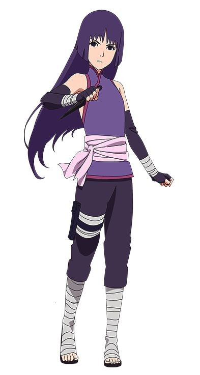Sumire Kakei est un ancien membre de l'équipe 15 et un kunoichi de l'équipe scientifique d'armes ninja de Konohagakure. Elle a été la représentante de classe de l'Académie Ninja pour la classe de Boruto. Après le décès de Danzo Shimura et la découverte de l'existence de Root et de ses actes, tous ses membres, y compris la famille de Sumire, ont été rejetés. Cela a conduit à la maladie de la mère de Sumire et finalement à sa mort. Sumire a été profondément affectée par la perte parce que l'un de ses rares plaisirs était de se brosser les cheveux avec sa mère. Au fil du temps, Sumire a perdu même la mémoire de la voix de sa mère. Tanuki Shigaraki, le père de Sumire et un dévot fou de Danzo, l'a élevée dans le but de se venger de Root. Il lui a finalement décerné le Gozu Tenno.
Sakumo Hatake
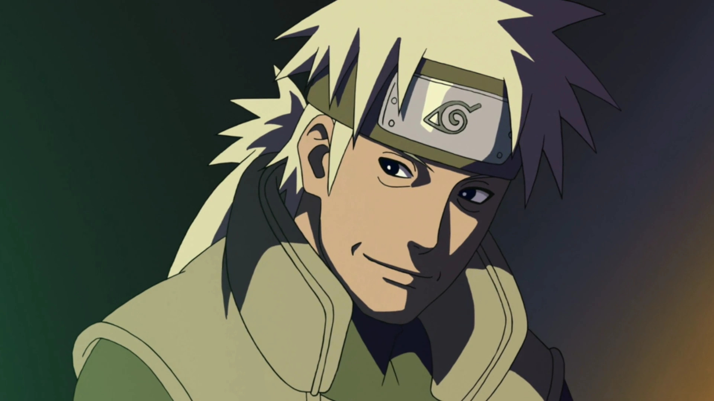Sakumo Hatake est le père de Kakashi Hatake. Il a été classé dans la même catégorie que les Sannin légendaires. Sakumo a gagné l'épithète de "Croc Blanc de la Feuille Cachée". Son nom était connu dans tous les autres villages. Sakumo était également responsable de l'assassinat des parents de Sasori. La vie de Sakumo a pris un mauvais tournant lorsqu'il a choisi de sauver la vie de ses camarades au lieu de terminer la mission. Sakumo a été réprimandé pour sa décision et à la fin, il est tombé dans le désespoir et s'est suicidé.
Suigetsu
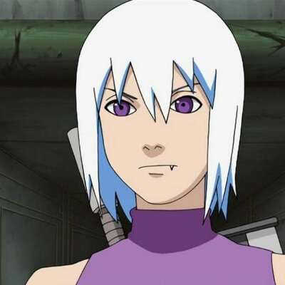Suigetsu était un membre du groupe de renégats de Sasuke, composé de lui-même, Suigetsu, Karin, et Jugo. Du quatuor, Suigetsu était l'humoriste autoproclamé. Il avait beaucoup de sarcastiques et faisait tout son possible pour se mettre dans la peau de Karin.
La phrase ci-dessus était particulièrement drôle venant de Suigetsu, car le public avait l'impression qu'il n'était probablement pas un vrai croyant dans le rêve de Sasuke. C'était encore plus drôle sur le moment, car il a fait un geste décisif avec la cuillère qu'il utilisait à ce moment-là. à ce moment-là.
black zetsu

Black Zetsu (黒ゼツ, Kuro Zetsu) est la manifestation physique de la volonté de Kaguya Ōtsutsuki. Ayant été créé pour assurer la renaissance de son créateur, il est secrètement à l'origine de nombreux événements qui ont façonné le monde des shinobis, Au cours de ces événements, il s'est fait passer pour la volonté manifestée de Madara Uchiha, ce qui l'a conduit à s'associer à Zetsu le Blanc pour devenir la moitié du membre de l'Akatsuki. membre de l'Akatsuki connu sous le nom de Zetsu (ゼツ, Zetsu).
Anko Mitarashi
En tant que surveillante de l'étape de survie des examens Chuunin, elle se débarrasse de ses ennemis comme d'un véritable brasier. Orochimaru était autrefois son tuteur, mais il l'a abandonnée lorsqu'elle a refusé de suivre sa voie maléfique.
Anko Mitarashi est une Jonin du village de Hidden Leaf. Elle était surveillante de la partie survie de l'examen Chunin. Elle était également une ancienne élève de l'antagoniste de longue date de la série, Orochimaru, mais ne partageait pas sa vision et a refusé de le suivre plus avant.
Karin
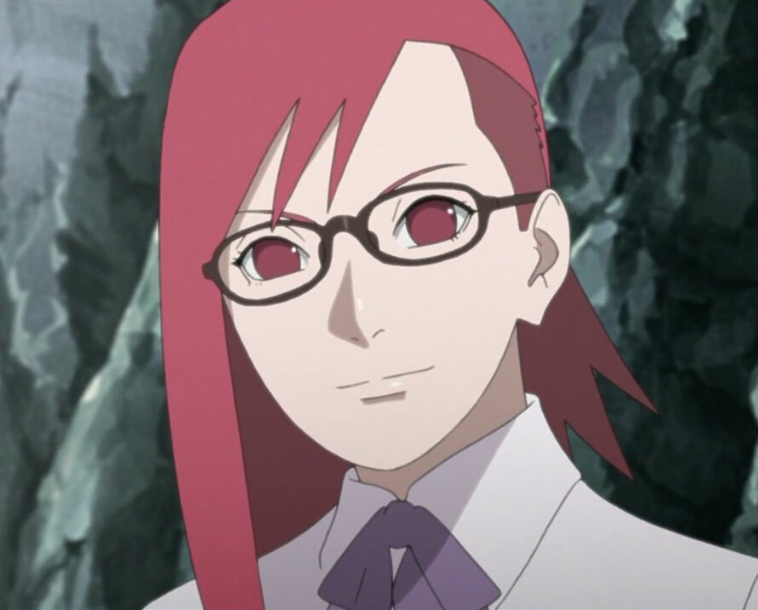Karin (香燐, Karin) est une subordonnée d'Orochimaru, une ancienne kunoichi de Kusagakure, et un membre du clan Uzumaki. Elle a aidé Orochimaru dans ses expériences, et a été laissée en charge en tant que gardienne de sa cachette du Sud pendant son absence. Elle a ensuite été recrutée dans le groupe Taka de Sasuke Uchiha, qui s'appelait initialement "Hebi" au moment de sa création.
Sai Yamanaka

Sai Yamanaka (山中サイ, Yamanaka Sai) est le chef Anbu du clan Yamanaka de Konohagakure. clan Yamanaka de Konohagakure. Avant cela, il était un membre de Root. Conformément à l'entraînement standard de Root, Sai a été conditionné pour supprimer toutes les émotions et en tant que tel, il avait des difficultés à se connecter aux autres. Lorsqu'il est intégré à l'équipe Kakashi pour remplacer pour remplacer Sasuke Uchiha, Sai commence à en apprendre plus sur les sentiments des gens et essaie de développer sa personnalité et son identité en créant des liens authentiques et en redécouvrant les émotions qu'on lui a appris à supprimer. qu'on lui a appris à supprimer.
Anko Mitarashi
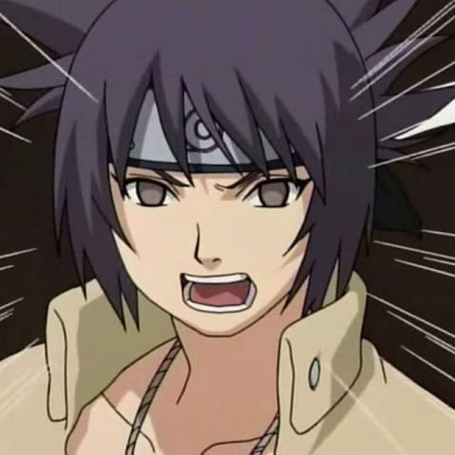La surveillante de l'étape de survie de l'examen Chuunin, elle passe à travers ses ennemis comme un brasier ardent. Elle a été un jour la tutrice d'Orochimaru, mais a été mais il l'a abandonnée quand elle a refusé de suivre sa voie maléfique. Anko Mitarashi est une Jonin du village de la Feuille Cachée. Elle était surveillante de la partie survie de survie de l'examen Chunin. Elle était également une ancienne élève de l'antagoniste de longue date de la série, Orochimaru. antagoniste de la série, Orochimaru, mais elle ne partageait pas sa vision et a refusé de le suivre plus loin.
Chiriku
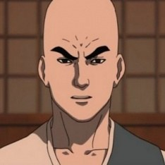Chiriku est un moine du Temple du Feu, anciennement membre des " 12 ninjas gardiens " du Seigneur du Pays du Feu. Ninjas" du Seigneur du Pays du Feu. Il y rencontrera Asuma Sarutobi, fils du troisième Hokage. Leur mission était d'escorter et de protéger le Daimyo du Pays du Feu. Feu.
Il vit aujourd'hui dans le Temple du Feu avec ses disciples. Il a pris sous son aile un jeune homme nommé Sora, le fils d'un des 12 ninjas gardiens décédés. Sa tête ayant été mise à prix à 30 millions de ryôs, il fut assassiné par Kakuzu et Hidan lors d'un combat au temple du Feu. Après cet affrontement, le temple du Feu a été détruit. Hidan et Kakuzu ont alors ramené le corps pour récupérer la prime. Et ainsi remplir les caisses de Akatsuki.
Fukusaku
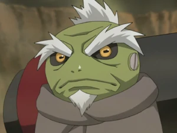Lorsque Jiraiya s'est accidentellement invoqué à l'envers au Mont Myōboku, Fukasaku salua le jeune shinobi et déclara que le Grand Sage Crapaud l'attendait. Quelque temps après, Fukasaku a enseigné à Jiraiya le senjutsu. Fukasaku était plus tard présent lorsque le Grand Sage Crapaud appela Jiraiya pour lui parler de sa prophétie.
Fukasaku, comme sa femme Shima, est considéré comme très sage et est très respecté par tous ceux qui les connaissent bien. En réalité, il se chamaille constamment avec Shima pour de petites choses alors qu'ils devraient se concentrer sur l'essentiel, comme le fait que qu'une bataille va leur faire manquer le dîner. Ils sont toujours proches, car Shima a le coeur brisé lorsque Fukasaku est tué par Pain. Bien que Fukasaku reste sérieux même dans les pires situations, lui et sa femme trouvent constamment une raison de se chamailler. l'un contre l'autre. Il a également tendance à qualifier le Grand Sage Crapaud de "sénile" parce que oublier constamment tout
Ten Tails - Juubi

Ces Dix Queues (十尾, Jūbi) sont la forme combinée de Kaguya Ōtsutsuki et de l'Arbre Dieu. l'Arbre Dieu, créée pour récupérer le chakra hérité par ses fils, Hagoromo et Hamura. Il est considéré comme l'ancêtre du chakra, et est lié à la légende du Sage des Six Chemins et à la naissance des shinners. Chemins et à la naissance des shinobis. Pour mettre fin au déchaînement de la bête, le Sage devint le jinchūriki des Dix Queues et divisa plus tard son chakra en neuf bêtes à queue pour l'empêcher de causer d'autres dommages. pour l'empêcher de causer d'autres dommages. Des siècles plus tard, sa renaissance devint l'objectif de Madara et Obito Uchiha, qui cherchèrent tous deux à devenir les jinchūriki de la bête afin de poursuivre leurs objectifs.
Eight Tails - Gyuki
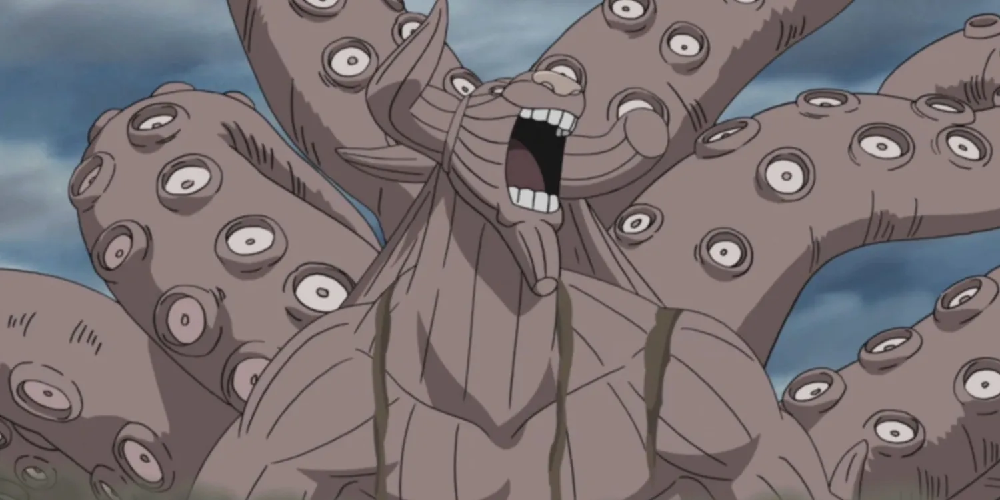Le Gyuki a été vendu au village du Nuage Caché avec le Matatabi, mais la nation a eu du mal à trouver un Jinchuriki capable de le contrôler. L'un d'entre eux était Blue B, le neveu du Troisième Raikage, mais après que Gyuki se soit déchaîné, le Raikage a été forcé de le sceller, causant la mort tragique de son neveu. Gyuki a finalement été enfermé dans Killer Bee, le fils adoptif du Troisième Raikage, qui s'est avéré être un hôte compatible. hôte compatible. Bee s'est lié d'amitié avec son Bijuu grâce au pouvoir du rap. leur relation est devenue parfaitement bidirectionnelle, permettant au ninja d'utiliser le pouvoir de Huit-Files à volonté. Gyuki est un yokai ressemblant à un boeuf, avec des cornes de mouton et des queues de tentacules. comme le deuxième plus fort des bijuu.
Seven-Tails - Chomei
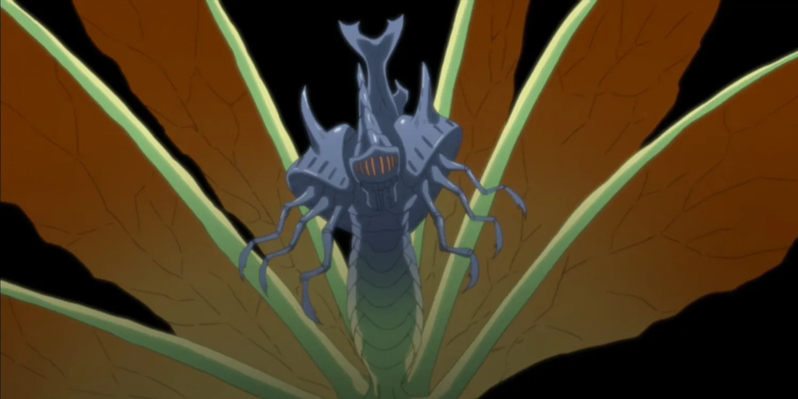Chomei était autrefois enfermé dans Fu, une femme ninja de la cascade cachée. Cascade Cachée, après avoir été vendue au village par Hashirama. C'était inhabituel, car la Cascade n'est pas l'une des cinq nations majeures de Naruto, mais elle était considérée comme assez puissante pour être inclus dans l'arrangement. Les flashbacks de Naruto montrent chacune des bêtes à queue comme des bébés. bébés, peu de temps après leur création par le Sage des Six Chemins, mais alors que la plupart de ces jeunes créatures sont des versions plus petites et plus mignonnes de celles d'aujourd'hui, Chomei a en réalité a pris un état larvaire, reflétant son design d'insecte en tant qu'adulte. Chomei est similaire à à un scarabée rhinocéros japonais, et comparé à ses semblables Bijuu, il est remarquablement placide et détendu. C'est probablement la raison pour laquelle Chomei ne ressemble pas aux démons typiques des anime.
Asura
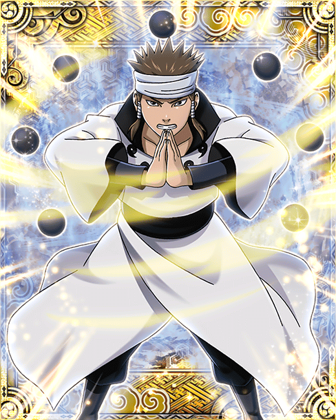Asura Ōtsutsuki (大筒木アシュラ, Ōtsutsuki Ashura) était le fils cadet de Hagoromo Ōtsutsuki. Bien que ce ne soit pas le choix le plus évident pour la plupart, il a hérité des enseignements de son père. l'enseignement de son père, et par conséquent, il a dû se battre contre son frère aîné Indra. frère aîné Indra. Asura est également considéré comme l'ancêtre des clans Senju et Uzumaki. Uzumaki.
Avec le pouvoir qui lui a été confié par son père, Asura a eu accès aux Six Voies Senjutsu, lui permettant de s'améliorer et d'augmenter ses différentes techniques. Dans cet état, il pouvait pouvait voler et manifester un avatar géant à trois visages et six bras, Six Paths : Kunitsukami.
Inuzuka Hana
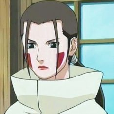Hana est une kunoichi du village de Konoha. Elle est la soeur de Kiba et la fille de Tsume
Hana est également spécialisée dans la médecine animale : elle est vétérinaire. Ses compagnons sont 3 chiens frères : Les Trois Frères Haimaru.
Izumi Uchiha
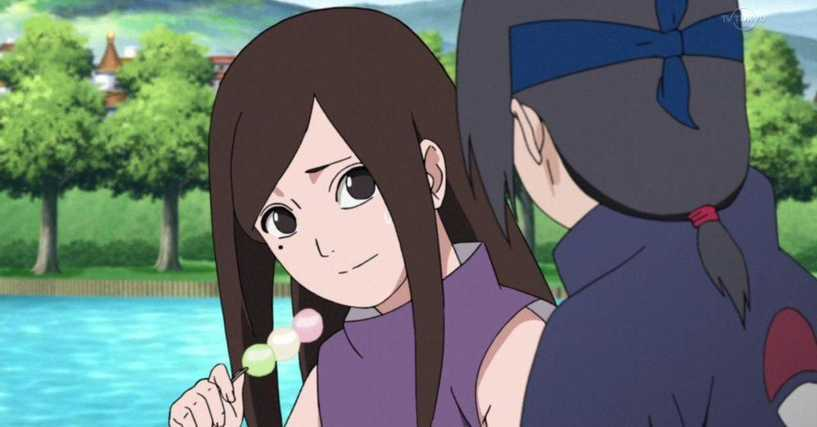Izumi était la fille de Hazuki Uchiha. Contrairement à sa mère, le père d'Izumi d'Izumi n'était pas un Uchiha. Pendant l'attaque du démon renard à neuf queues, son père est mort en la protégeant. Au cours de l'attaque du démon renard à neuf queues, son père est mort en la protégeant. de culpabilité parce qu'il ne serait pas mort si Izumi avait été plus forte, Izumi a fini par éveiller son Sharingan. Sharingan. Elle et sa mère ont ensuite rejoint le clan Uchiha.
Izumi s'est inscrite à l'académie de Konoha quelques années plus tard. s'est prise d'affection pour Itachi Uchiha, un garçon de la classe voisine de la sienne. de parler avec lui pendant les pauses, de rentrer avec lui après les cours et de le défendre des critiques de leurs camarades. Itachi s'est d'abord désintéressé d'Izumi comme il l'a fait pour toutes les autres filles. qu'il avait pour toutes les autres filles jusqu'à ce qu'il découvre qu'elle possédait le Sharingan, qu'il n'avait pas encore éveillé. Il s'est ensuite rapproché d'elle dès que leurs chemins se sont croisés. se croisent.
Fūka
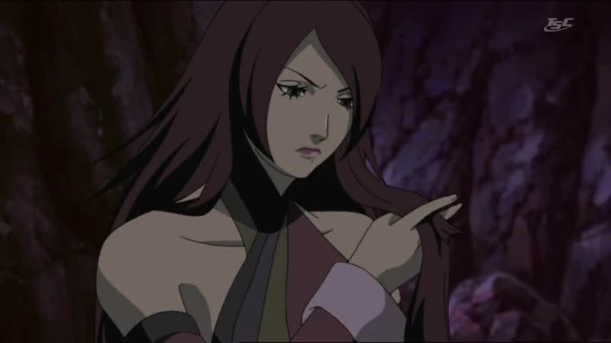Fūka a été dépeint comme une mégère séduisante pour attirer ses proies. et de les tuer avec une exécution par baiser.
Elle accélèrerait encore le processus en donnant à ses cibles le choix entre un baiser français ou baiser traditionnel. Ses victimes préférées étaient celles qui avaient une affinité naturelle avec le chakra du vent. Elle était très fière de son apparence et devenait furieuse lorsqu'on lui faisait du mal. Elle était très fière de son apparence et devenait furieuse lorsque l'on portait atteinte à son physique, en particulier à ses cheveux, l'enveloppe même de son âme. Lors de son deuxième combat contre Naruto Uzumaki, elle a montré un côté sadique en se délectant de l'angoisse de Naruto. en se délectant de l'angoisse de Naruto. Elle a également montré un côté intelligent, comme lorsqu'elle qu'elle pensait que Sora et Naruto étaient liés d'une manière ou d'une autre.
Neji Hyuga
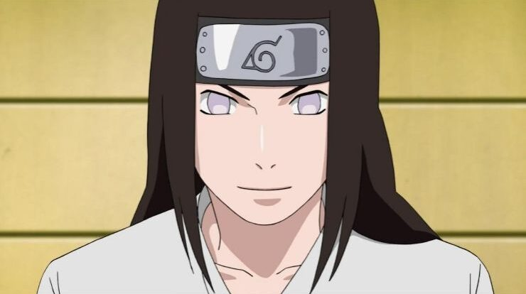Neji Hyuga était un shinobi du clan Hyūga de Konohagakure. Bien qu'il soit un prodige, même selon les normes des Hyūga, Neji était membre de la maison de branche du clan ; quel que soit son niveau de compétence, il serait toujours au service de la maison principale des Hyūga.
En tant que membre de l'équipe Guy, il a cherché la force nécessaire pour construire l'avenir qu'il souhaitait pour sa famille et ses amis, et a finalement sacrifié sa vie pour protéger la personne même qui lui a enseigné la liberté de choisir son destin, Naruto.
Rôshi
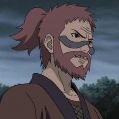Rôshi était le dernier Jinchûriki de Yonbi, le démon à 4 queues. Il a été tué par Kisame Hoshigaki, un ancien membre de l'Akatsuki, qui voulait réunir tous les Biju. les Biju.
Rôshi sera ressuscité plus tard lors de la quatrième grande guerre ninja par Kabuto Yakushi. Il combattra Bee et Naruto.
Suigetsu
Suigetsu était un membre du groupe de renégats de Sasuke, composé de lui-même, Suigetsu, Karin, et Jugo. Du quatuor, Suigetsu était l'humoriste autoproclamé. Il avait beaucoup de sarcastiques et faisait tout son possible pour se mettre dans la peau de Karin.
La phrase ci-dessus était particulièrement drôle venant de Suigetsu, car le public avait l'impression l'impression qu'il n'était probablement pas un vrai croyant dans le rêve de Sasuke. C'était encore plus drôle sur le moment, car il a fait un geste décisif avec la cuillère qu'il utilisait à ce moment-là. à ce moment-là.
Boruto Uzumaki
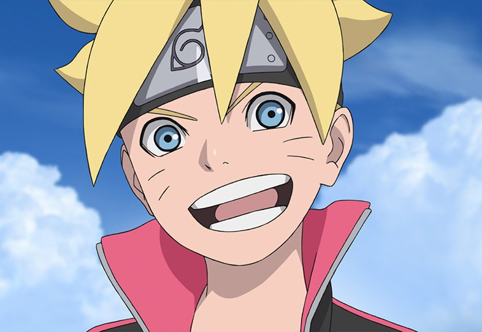Boruto Uzumaki (うずまきボルト, Uzumaki Boruto) est un shinobi du clan Uzumaki de Konohagakure. clan Uzumaki de Konohagakure et un descendant direct du clan Hyūga par sa mère. Initialement nonchalant dans ses fonctions de membre de l'équipe 7 et plein de ressentiment envers son père et le poste d'Hokage parce que cela ne lui laissait pas de temps pour sa famille. finit par respecter et se réconcilier avec son père et son rôle d'Hokage. son mentor Sasuke Uchiha - un système de soutien pour l'Hokage et le village. village.
Uchiha Madara
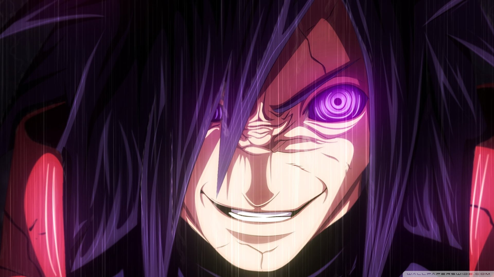Madara Uchiha (うちはマダラ, Uchiha Madara) était le chef légendaire du clan Uchiha. Il a fondé Konohagakure avec son ami d'enfance et rival, Hashirama Senju, dans l'intention de commencer une ère de paix. l'intention de commencer une ère de paix. Lorsque les deux hommes n'ont pas réussi à se mettre d'accord sur la manière d'atteindre cette paix, ils se sont battus pour le contrôle du village. village, un conflit qui s'est terminé par la mort de Madara. Madara, cependant, a réécrit sa mort et s'est caché pour travailler sur ses propres plans. Incapable de les achever dans sa vie naturelle, il a confié son savoir et ses plans à Obito peu de temps avant sa mort réelle. Des années plus tard, Madara reviendrait à la vie, pour voir ses plans déjoués et finalement... finalement réaliser son erreur et s'amender auprès d'Hashirama avant de mourir. mort définitive.
Ebisu

Spécialisé dans l'entraînement privé des Ninja, et est souvent considéré comme un pervers refoulé. Il est l'un des sensei qui a formé Konohamaru.
Yukimaru
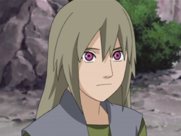Yukimaru est un jeune orphelin qui est devenu l'un des cobayes d'Orochimaru. d'Orochimaru, en raison de sa capacité à contrôler partiellement les Trois Queues.
Yukimaru vivait avec sa mère dans un village qui a été attaqué par les partisans d'Orochimaru. lorsque Yukimaru était enfant.
Yamato

Yamato est une personne très discrète, prudente, attentive et bien préparée. Il projette un comportement calme et stoïque dans les situations stressantes. Il prend ses missions très Il prend ses missions très au sérieux et insiste même pour qu'on l'appelle par son nom de code actuel, quel qu'il soit.
Yamato est l'un des principaux personnages secondaires de la série animée Naruto et de la série animée Boruto : Naruto Next Generations. Boruto : Naruto Next Generations (série animée/manga). Il est un ANBU au service de Konohagakure. En raison de son jutsu unique, il est ajouté à l'équipe Kakashi en tant que remplaçant temporaire de Kakashi Hatake. pour remplacer Kakashi Hatake. Bien que Kakashi finisse par réintégrer l'équipe, Yamato y reste pour Yamato reste pour apporter son aide quand c'est nécessaire.
Hanabi Hyuga
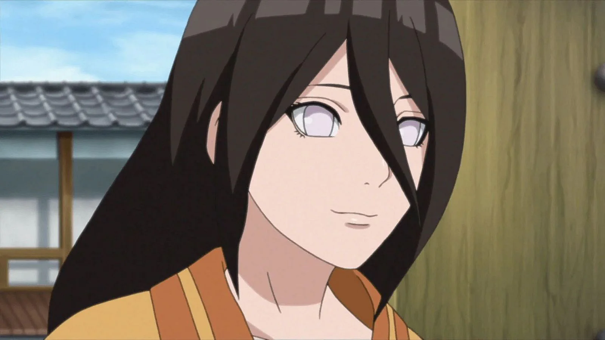Hanabi est la jeune sœur de Hinata. Elle joue un rôle important dans Le dernier : Naruto le film. Son père est Hiashi Hyuga et est la tante des enfants d'Hinata, Boruto et Himawari. d'Hinata, Boruto et Himawari. Son cousin est Neji Hyuga. Naruto Uzumaki est son beau-frère.
Tsunade
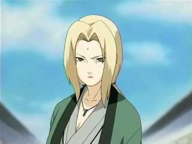Tsunade est une kunoichi du village de la Feuille Cachée et possède Une force physique monstrueuse, des techniques de guérison et de régénération extrêmement avancées, médecin/chirurgien Elle possède une connaissance approfondie du corps humain et une grande maîtrise des chakras. A l'époque, elle faisait partie de "Les légendaires Sannin" avec Jiraiya et Orochimaru, et sous la tutelle du Troisième Hokage. Actuellement, elle est est devenue le Cinquième Hokage du Village des Feuilles Cachées. Ses grands-parents sont sont Hashirama Senju et Mito Uzumaki.
La capacité caractéristique de Tsunade est sa force inhumaine, qui provient de son excellent contrôle du chakra. En stockant le chakra et en le libérant au point de contact, elle peut augmenter sa force au point de pouvoir briser des rochers à mains nues. mains. Elle est également un Medical-nin extrêmement talentueux, et peut guérir des blessures que la plupart des que la plupart des autres considéreraient comme impossibles. Elle est allée jusqu'à utiliser le Sceau de l'Ombre : Release pour stocker son chakra dans son front pour créer Rebirth, une technique qui libère le chakra pour régénérer rapidement les cellules de son corps afin de guérir n'importe quelle blessure. cellules de son corps pour guérir n'importe quelle blessure. Cela lui confère une " immortalité " au combat que même Orochimaru lui enviait. Cependant, en raison de la régénération rapide des cellules, la technique raccourcit sa vie de la même manière que la transformation mais de façon plus contrôlée. En raison du risque associé à cette technique, Tsunade a choisi de n'utiliser Creation Rebirth que dans des situations extrêmement situations désespérées.
Jirobo

Un ninja du village du son caché et membre des Cinq du son. Il était était le membre le plus fort physiquement des Quatre Sons, mais le plus faible dans l'ensemble. Selon les autres membres du groupe, il était néanmoins un adversaire redoutable. De plus, Shikamaru a déclaré que les prouesses de Jirōbō étaient de niveau jōnin. Dans l'anime, un autre témoignage de ses prouesses est qu'il a été choisi pour la réincarnation par Kabuto.
Hanare
Hanare (ハナレ, Hanare) est un kunoichi du village de Jōmae.
En tant que jeune enfant, on dit que Hanare était très solitaire car elle n'avait jamais connu sa famille ou vu son propre village. Elle a été formée dès son plus jeune âge à l'art de l'espionnage. Un jour, elle a été trouvée en train de pleurer dans un endroit proche de son village par le jeune Kakashi, qui l'a repérée et et l'a portée sur son dos. Il lui a alors expliqué qu'elle pouvait lever les yeux vers les nuages et trouver son chemin. son chemin. Ils ont alors été vus par un ninja du village d'Hanare et Kakashi l'a déposée sur sur ses pieds, lui a dit au revoir et est parti. Elle était alors très heureuse que quelqu'un comme Kakashi ait pu l'aider. dans sa vie. À un moment donné, elle a rencontré Kakashi Hatake et a développé des sentiments romantiques pour lui. Hanare, un espionne du Jōmae Village du Pays des Clés, a été convoquée pour infiltrer le Pays du Feu et pour enquêter sur les affaires de Konoha. Elle a été capturée par Anbu et placée dans la salle de l'honnêteté pour être être torturée.
Fūka
Fūka a été dépeint comme une mégère séduisante pour attirer ses proies. et de les tuer avec une exécution par baiser.
Elle accélèrerait encore le processus en donnant à ses cibles le choix entre un baiser français ou baiser traditionnel. Ses victimes préférées étaient celles qui avaient une affinité naturelle avec le chakra du vent. Elle était très fière de son apparence et devenait furieuse lorsqu'on lui faisait du mal. Elle était très fière de son apparence et devenait furieuse lorsque l'on portait atteinte à son physique, en particulier à ses cheveux, l'enveloppe même de son âme. Lors de son deuxième combat contre Naruto Uzumaki, elle a montré un côté sadique en se délectant de l'angoisse de Naruto. en se délectant de l'angoisse de Naruto. Elle a également montré un côté intelligent, comme lorsqu'elle qu'elle pensait que Sora et Naruto étaient liés d'une manière ou d'une autre.
Mizuki
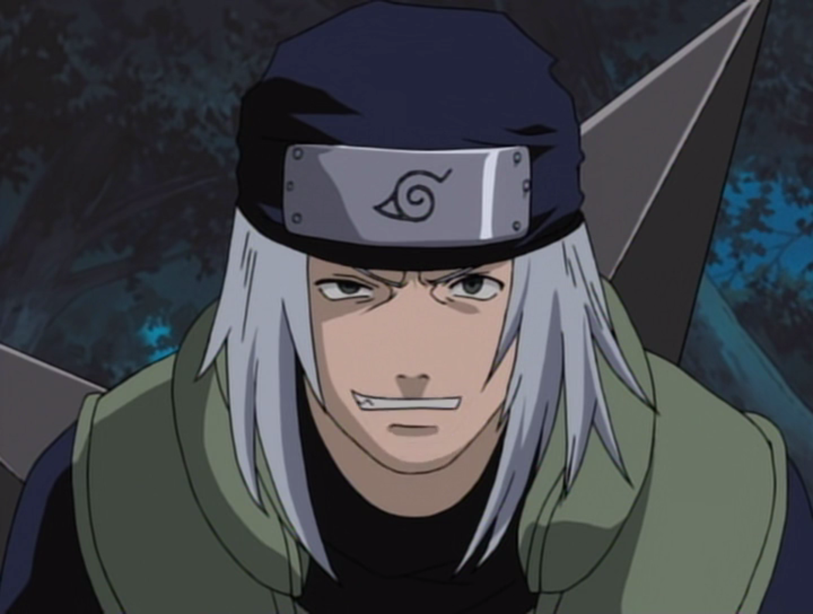La toute première personne que Naruto a affronté dans un combat afin de connaître son pouvoir et aussi apprendre à connaître sa propre voie ninja. Il l'a battu dans la bataille contre lui tout en sauvant Iruka Umino son sensei dans son Académie de formation élémentaire.
Mizuki a dupé Naruto Uzumaki pour qu'il vole le rouleau de sceaux de Konoha pour lui. A l'origine, Mizuki avait prévu de faire de Naruto un bouc émissaire et de le tuer pour cacher la vérité. de sa tromperie et de quitter secrètement le village avec le parchemin en sa possession. Cependant, le plan de Mizuki a déraillé lorsque Iruka a trouvé Naruto en premier et a décidé de révéler l'identité de Naruto en tant que Ninja. l'identité de Naruto en tant que jinchūriki des Neuf Queues pour s'assurer qu'il s'enfuit désillusionné. Cependant, en entendant Iruka prendre sa défense, Naruto vient en aide à son professeur et utilise la technique de clonage d'ombres multiples. et utilise la technique des clones d'ombres multiples qu'il a apprise du parchemin pour battre Mizuki. inconsciente pour avoir fait du mal à Iruka.
The Demon Brothers
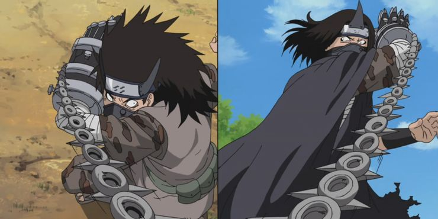La première bataille de Naruto contre un ninja non-Konoha a eu lieu au début de l'arc de la mission d'escorte du Pays des Vagues. Deux alliés de Zabuza attendaient à l'extérieur de Konoha afin de tendre une embuscade à Tazuna. afin de tendre une embuscade à Tazuna, qui était escorté par l'équipe 7.
Il s'agissait de deux anciens shinobis de la Brume Cachée, connus sous le nom de Frères Démons, qui avaient fait défection de leur village afin de rejoindre le coup d'état de Zabuza. Kakashi et Sasuke ont pu facilement se débarrasser des frères démons et garder Tazuna en vie. Ils ont ensuite été attachés près d'un arbre et laissés à l'abandon. Dans le manga, nous ne voyons jamais les frères démons se faire arrêter, et leur évasion est l'un des moments les plus marquants de leur histoire. d'être attachés est l'une des parties les plus fondamentales de l'entraînement ninja. Les frères démons ont-ils ont-ils pu s'échapper ? Si oui, ont-ils choisi d'abandonner Zabuza ? Pourquoi ne sont-ils jamais réapparus dans l'histoire par la suite ?
Madara Uchiha
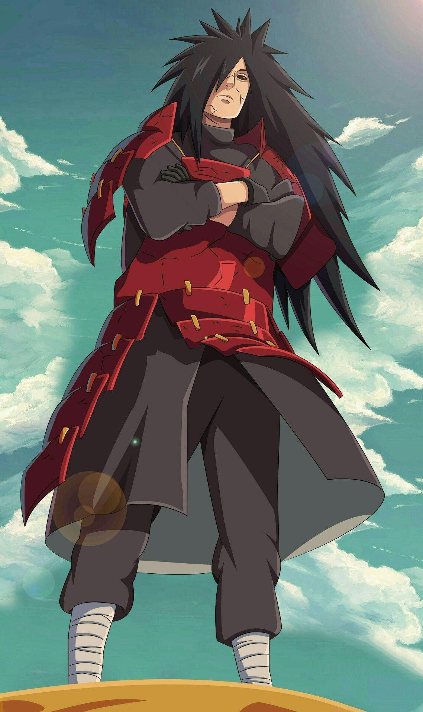Madara Uchiha était le chef légendaire du clan Uchiha. Il a fondé Konohagakure avec son ami d'enfance et rival, Hashirama Senju. l'intention de commencer une ère de paix.
Quand les deux hommes n'ont pas réussi à se mettre d'accord sur la façon d'atteindre cette paix, ils se sont battus pour le contrôle du village. village, un conflit qui s'est terminé par la mort de Madara. Madara, cependant, a réécrit sa mort et s'est caché pour travailler sur ses propres plans. Incapable de le réaliser dans sa vie naturelle vie, il confia ses connaissances et ses plans à Obito peu avant sa mort réelle. Des années plus tard, Madara reviendrait à la vie, pour voir ses plans déjoués et finalement... finalement réaliser son erreur et s'amender auprès d'Hashirama avant de mourir. mort définitive.
Tayuya

Une kunoichi du village du son caché et membre des Sound Cinq.
Tayuya est l'un des quatre ninjas d'Orochimaru. Elle est grossière et de mauvais caractère, et pourtant très puissante. Sa seule arme est une flûte qu'elle peut utiliser pour invoquer trois démons géants connus sous le nom de Doki. Tayuya est également très intelligente et peut imaginer d'excellentes stratégies et tactiques. et tactiques.
Kagura

La méchante principale de Clash of Ninja Revolution 2, c'est une ex-ANBU. de l'ANBU.
Tenten
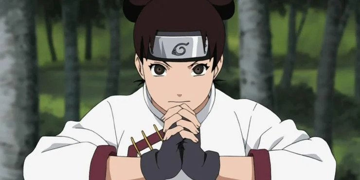Tenten est l'un des principaux personnages secondaires de la série d'anime/manga Naruto et de la série animée Boruto : Naruto Next Generations. Elle est une kunoichi de niveau chūnin de Konohagakure et membre de l'équipe Guy.
Itachi Uchiha

Itachi Uchiha est un personnage fictif de la série manga et anime Naruto. créés par Masashi Kishimoto.
Itachi est le frère aîné de Sasuke Uchiha, et est responsable de l'assassinat de tous les membres de leur clan, n'épargnant que Sasuke. Il apparaît comme un terroriste de l'organisation organisation Akatsuki et est le plus grand ennemi de Sasuke. Au cours de la deuxième partie du manga, Itachi s'implique dans des attaques contre des ninjas possédant des créatures à queue jusqu'à ce qu'il affronte Sasuke dans un combat à un contre un. Bien qu'Itachi périsse au cours du duel final, il est révélé plus tard qu'Itachi avait une raison secrète d'assassiner le clan Uchiha. le clan Uchiha.
Isaribi
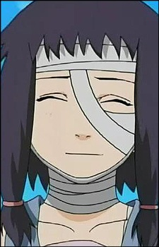Isaribi était une créature en partie marine dont l'arc du personnage était similaire à celui de Naruto. celui de Naruto. Elle a reçu beaucoup de haine parce qu'elle n'était pas ou ne se comportait pas comme les autres membres de son clan. de son clan. Naruto lui montre le pouvoir de l'amitié et lui redonne espoir. Amachi- le scientifique qui a transformé Isaribi en créature marine exprime clairement qu'il n'avait pas l'intention de la tuer. intentions de la tuer, mais seulement wnated de la disséquer une fois qu'elle est devenue sans valeur pour lui. pour lui.
Kurama

Kurama est le démon renard à neuf queues qui réside en Naruto et qui augmente sa puissance. Il est la plus puissante des bêtes à queue. Sa puissance est équivalente à celle toutes les huit bêtes à queue. Il était sous contrat avec Madara Uchicha à l'époque du premier Hokage. Après la mort de Madara, Obito envoya Kurama au village de Konoha où il se livra à un déchaîné. Le quatrième Hokage, Minato, a scellé la moitié du Chakra de Kurama en lui et l'autre moitié dans son nouveau-né, Naruto. Kurama était l'icône de la "haine", c'est pourquoi Naruto, qui était le jinjuriki de Kurama, a été tué. Kurama était détesté par tous. Finalement, Naruto a calmé Kurama et a cédé son pouvoir pour vaincre Kaguya et Ishiki Otsusuki.
Hiashi Hyūga

Hiashi Hyuga (日向ヒアシ, Hyūga Hiashi) est un shinobi de Konohagakure, ainsi que le chef actuel du clan Hyūga.
Hiashi est né quelques secondes avant son frère jumeau Hizashi, faisant d'Hiashi le chef du clan Hyūga et d'Hizashi un membre de la maison secondaire. du clan Hyūga et Hizashi un membre de la maison secondaire, dont le seul but dans la vie serait de protéger les membres de la maison principale. Des années plus tard, à la naissance de Neji, Hizashi est devenu amer à l'idée que son fils ne pourrait jamais atteindre son plein potentiel comme un membre de la maison principale. de la maison principale, ce qui l'a amené à éprouver ouvertement du ressentiment envers Hiashi et sa fille. Hiashi est également responsable du marquage du sceau de malédiction de la famille sur le front de Neji, ce qui tend encore plus la relation entre les deux frères. la relation entre les deux frères.
Bansai
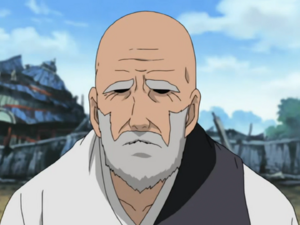Bansai est un ancien moine ninja du Temple du Feu ainsi que le moine en chef du temple. moine du temple.
Bansai est une personne très gentille qui se soucie profondément de ses camarades, comme on l'a vu lorsqu'il a dit une prière pour Asuma Sarutobi avant de partir au combat.
Minato Namikaze
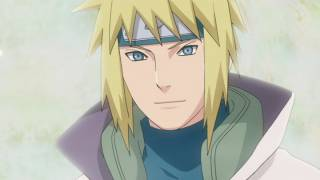Minato Namikaze est un personnage de l'univers de Naruto. Il est plus connu sous le nom de connu sous le nom de Quatrième Hokage ou d'Eclair Jaune de Konoha pour sa capacité à utiliser la technique du Dieu du Tonnerre volant. Technique du dieu du tonnerre. Il est également le père du protagoniste de la série, Naruto. Il est le professeur de Kakashi Hatake, Obito Uchiha et Rin Nohara. Il est également l'un des élèves de Jiraiya.
Kushina Uzumaki
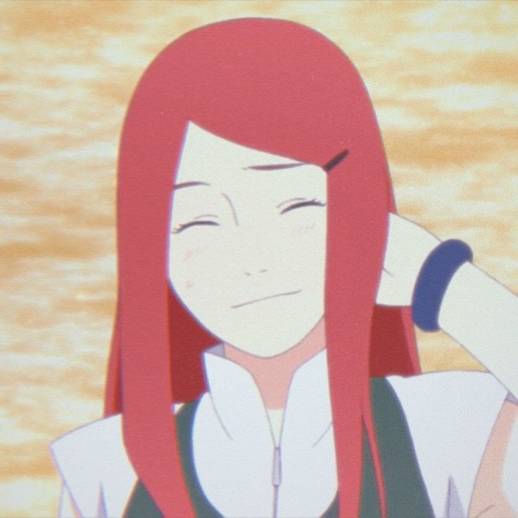Kushina Uzumaki (うずまきクシナ, Uzumaki Kushina) était une Konohagakure kunoichi qui était originaire du clan Uzumaki d'Uzushiogakure. Elle était la deuxième jinchūriki des
BACKGROUND
Née dans le célèbre clan Uzumaki d'Uzushiogakure, Kushina a passé la majeure partie de sa jeunesse à être prise dans la guerre, ce qui l'a poussée à rechercher une paix quotidienne. À un jeune âge, elle a été envoyée à Konoha et inscrite à l'Académie. Voulant faire une première impression forte, elle a proclamé à sa classe qu'elle serait la plus grande championne du monde. première femme Hokage. Les autres enfants ont ri de sa déclaration et ont commencé à l'appeler "Tomate" à cause de son visage rond et de ses cheveux roux. Depuis Minato a prouvé qu'il était tout sauf cela, il l'a acceptée et a aimé la seule chose qu'elle détestait chez elle, Kushina tomba amoureuse de lui, considérant désormais ses cheveux roux comme le "fil rouge du destin" (運命の赤い糸, unmei no akai ito) qui les avait réunis.
Kawaki
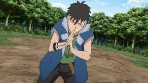Kawaki (カワキ, Kawaki) est un jeune tatoué qui est devenu membre de Kara Kara après avoir été amené par Jigen d'un père ivrogne, portant un tatouage du chiffre romain IX sous l'œil gauche. romain IX sous son œil gauche et a reçu une marque Kama de Jigen pour être transformé en arme vivante pour Kara. arme vivante pour Kara. Il a été lourdement modifié avec des Shinobi-Ware microscopiques implantés dans son corps qui lui donne des capacités similaires à la transformation en sage de Jugo en modifiant sa physiologie à un niveau cellulaire.
Pour des raisons non encore révélées, Kawaki a quitté Kara et a rencontré Boruto qui l'a amené à la Feuille Cachée où il vit avec la famille Uzumaki. Les deux hommes finissent par devenir ennemis comme le laisse entendre le prologue de la série Boruto, un Kawaki plus âgé apparaissant comme l'auteur de la destruction de Konoha. destruction de Konoha alors qu'il affronte un Boruto plus âgé en déclarant que l'ère des shinobis est arrivée. des shinobis a pris fin. Sa voix dans l'anime japonais est celle de Yūma Uchida.
Eida
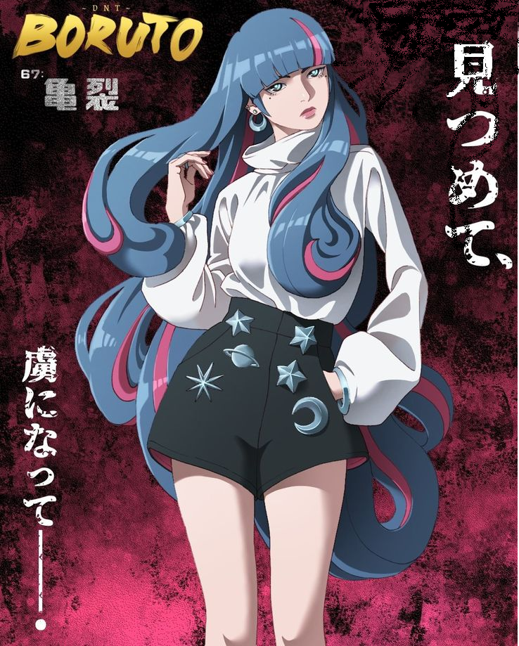Dans son complot pour tuer Jigen, Amado a lourdement modifié Eida, ainsi que son jeune frère Daemon. son jeune frère Daemon avec un Shinobi-Ware aux capacités supérieures à celles de Jigen. Les effets de ses modifications l'ont amenée à mépriser Amado à jamais. En raison de sa puissance supérieure, Jigen a ordonné son élimination. Boro a reçu cet ordre. Cependant, affecté par les pouvoirs d'Eida, Boro n'a pas pu se résoudre à accomplir la tâche, et au lieu de cela, il a caché Eida et Daemon dans un endroit éloigné géré par sa secte pour son propre usage. pour son usage personnel.
Eida est une personne très froide et indifférente. Elle se soucie peu des événements qui l'entourent. Cela vient du fait qu'elle s'est ennuyée dans la vie qu'on lui a imposée.
Daemon
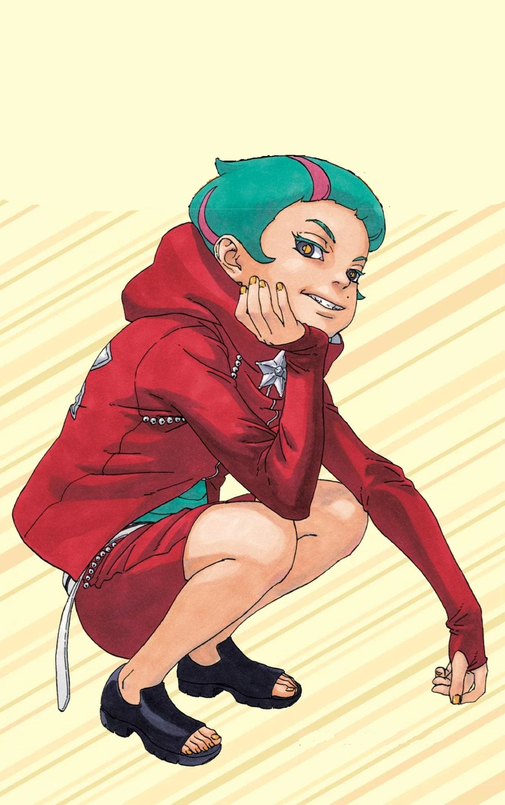Daemon était un membre de Kara. Il était l'un des cyborgs qu'Isshiki a ordonné de démanteler. Cependant, Boro a été séduit par Ada, et il n'a pas pu se résoudre à finir la tâche, et il a été manipulé pour stocker Ada et Daemon en sécurité dans des pods pendant plusieurs années. Plus tard, les deux seront réveillés par Code.
Nagato Uzumaki
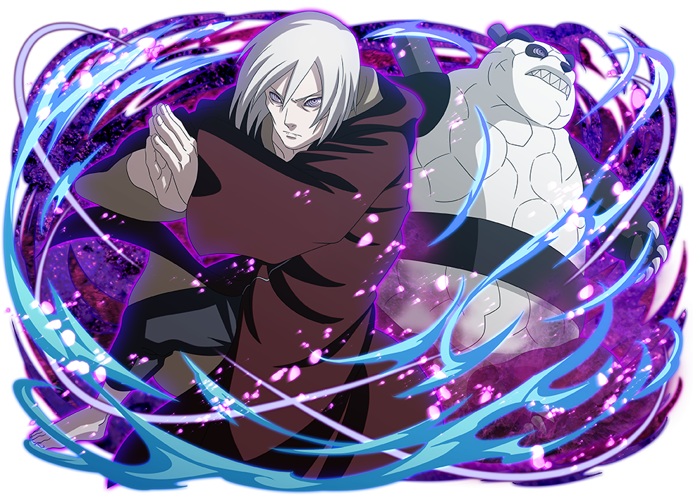Nagato était principalement connu sous le pseudonyme de Pain. Nagato est le figure de proue de l'Akatsuki qui souhaite capturer les bêtes à queue scellées dans diverses personnes dans le monde des shinobis. Après avoir acquis et scellé la plupart la plupart des bêtes dans une statue, le supérieur de Nagato l'envoie capturer le démon renard à neuf queues scellé dans la série. démon renard à neuf queues scellé dans le protagoniste de la série, Naruto Uzumaki (avec qui il s'avère être apparenté). qu'il s'avère être un parent). Avant de partir pour capturer Naruto, Nagato s'engage dans un combat mortel avec son ancien mentor, Jiraiya. Son passé d'orphelin de guerre orphelin, et la perte de son meilleur ami sont explorés. En raison de ses expériences traumatisantes, qui découlent des conflits humains, Nagato a pour objectif de créer un nouveau monde, libéré du chaos de la guerre.
YAMATO
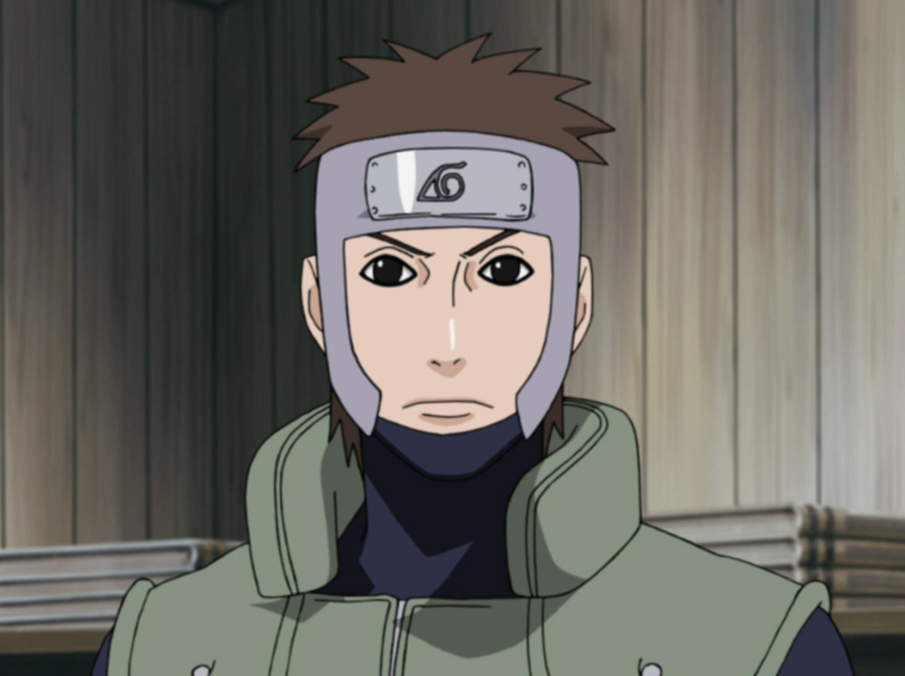En voyant le rôle central que Kakashi a joué en tant que leader de l'équipe 7. avec Naruto, Sakura et Sasuke, il y avait de grandes attentes pour Yamato quand il a temporairement pris la place de Kakashi dans la nouvelle équipe 7. En tant qu'ancien Anbu qui partage la même technique de style bois que le Premier Hokage, Yamato avait une aura mystérieuse afin d'éveiller la curiosité des fans. Cependant, après que Kabuto l'ait capturé et que Kakashi ait repris le contrôle de l'Équipe Sept, Yamato a disparu dans les abysses et a été laissé comme un personnage sans aucune agence.
Hashirama Senju

Le premier hokage, chef du clan Senju, l'un des fondateurs de Konohagakure. Frère aîné du Second Hokage et grand-père du Cinquième Hokage. Il possède le Style du Bois et a un ami et rival appelé Madara Uchiha. Il était l'incarnation incarnation d'Asura. Il a maîtrisé le Senjutsu et a pu vaincre Madara. Il est aussi connu comme le Dieu des Shinobi. La quantité de chakra possédée par Hashirama était équivalente à celle de Naruto et à la moitié de Kurama. Dans l'histoire l'histoire du monde shinobi, il était le seul à être respecté par Madara.
Yahiko

Yahiko (弥彦, Yahiko) était un shinobi d'Amegakure. Aux côtés de ses camarades orphelins de guerre, Nagato et Konan, il fonda et dirigea l'Akatsuki dans le but de ramener paix. À la suite de la mort de Yahiko, Nagato transforma son corps en la Deva Path de ses Six Chemins de la Douleur, qu'il utilisa comme image publique de la direction de l'Akatsuki. le leadership de l'Akatsuki.
Yahiko est devenu orphelin pendant la deuxième guerre mondiale des shinobis, ce qui l'a obligé à voler de la nourriture pour survivre. pour survivre avant de faire équipe avec un autre orphelin de guerre nommé Konan. Peu de temps après, ils ont trouvé un endroit à appeler la maison, Yahiko a exprimé son mécontentement de Konan apportant un autre orphelin de guerre.
Deidara
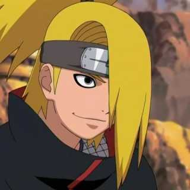Deidara est un membre du groupe Akatsuki, Deidara était associé à Sasori avant sa mort, après quoi il a fait équipe avec Tobi.
Deidara a une capacité très unique, il utilise ses mains où ses paumes possèdent des bouches qui lorsqu'elles nourrissent un certain explosif d'argile peuvent créer un oiseau volant ou de nombreuses petites araignées qui peuvent être contrôlées ou se contrôler elles-mêmes après quoi elles exploseront sur commande ou quand elles ou quand ils le jugent bon.
Tsuande
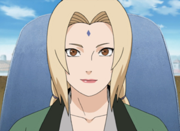Tsunade (綱手, Tsunade) est une descendante du clan Senju et Uzumaki, et est l'un des Sannin de Konohagakure. Elle est réputée pour être la kunoichi la plus forte du monde et le plus grand médecin-nin du monde. La perte répétée de ses proches a conduit Tsunade à abandonner plus tard Tsunade abandonne la vie de shinobi pendant de nombreuses années. Elle est finalement persuadée de revenir à Konoha et de prendre le manteau du Cinquième Hokage (五代目火影, Godaime Hokage, signifiant littéralement : Cinquième Ombre de Feu), où ses compétences s'avèrent précieuses pour le village.
KIMIMARO
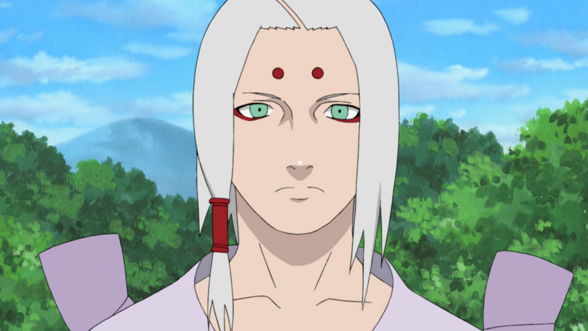Kimimaro était le seul survivant du clan Kaguya. Après avoir voué sa vie à Orochimaru, il devint le chef de l'anciennement nommé Sound Five (音隠れの忍五人衆, Otogakure no Shinobi Gonin Shū, signifiant littéralement : Shinobi du son caché, cinq personnes), jusqu'à ce qu'il tombe malade, ce qui l'obligea à quitter le groupe.
Zabuza

Zabuza Momochi, un mercenaire assassin et ancien membre des Sept épéistes de la brume. C'est un maître des assassinats silencieux et, avec son Jutsu de l'eau, il est redouté comme le Démon de la brume cachée. Il a été vaincu par Kakashi et il a donné sa vie pour compenser la peine qu'il a ressentie après que la mort d'Haku.
Haku
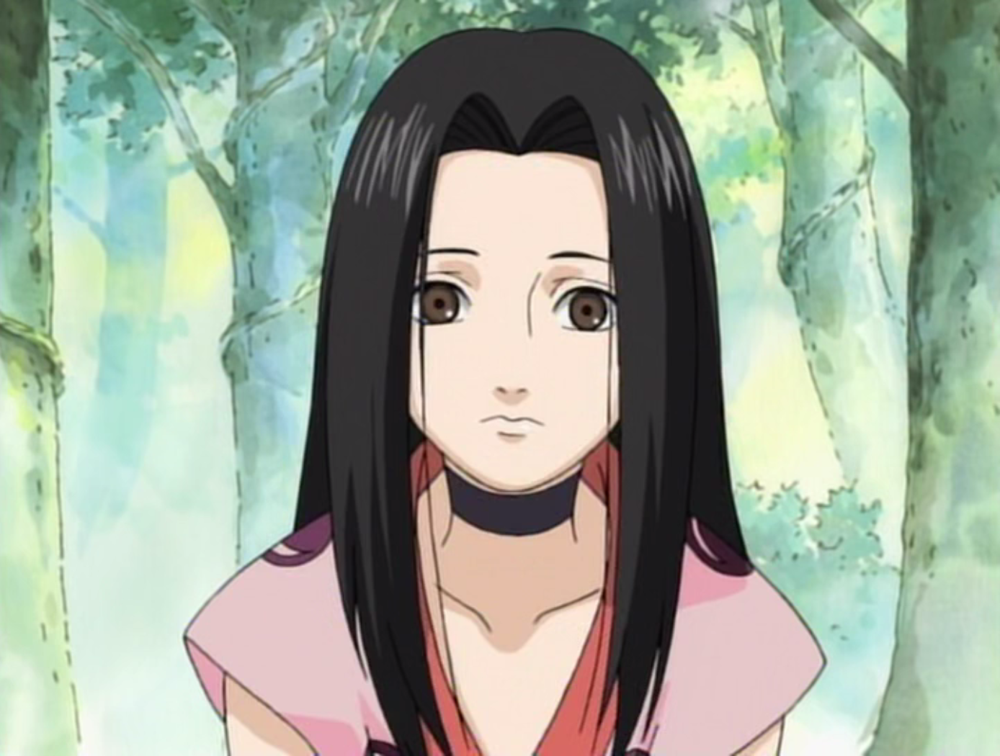Haku était un orphelin du Pays de l'Eau, et un descendant du clan Yuki. du clan Yuki. Il devint ensuite un shinobi sous la tutelle de Zabuza Momochi avec qui il s'associa plus tard pour devenir un Ninja mercenaire.
Haku était un garçon de 15 ans à l'apparence androgyne et était même considéré comme beau par Naruto. beau par Naruto, qui s'est exclamé qu'il était " plus beau que Sakura ", même après qu'il l'a même après qu'il l'ait informé qu'il était un homme. Il avait de longs cheveux noirs, une peau pâle, de grands yeux marron foncé et un corps mince. brun foncé, et un corps mince.
Shizune
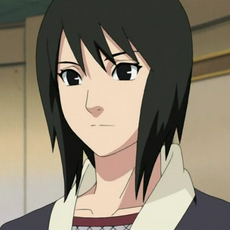Une kunoichi du village de la feuille cachée. Shizune est l'assistante de Tsunade, elle est également une ninja médecin expérimentée.
Shizune est la nièce de Dan, l'amant de Tsunade. Quelque temps après la mort de Dan, Tsunade a quitté Konoha et Shizune l'a accompagnée en tant que préposée. Le lien entre Tsunade et Shizune est si fort que Shizune considère que son but dans la vie est de prendre soin de Tsunade. En plus d'être l'accompagnatrice de Tsunade, elle est également une médecin-nin et jōnin de grand talent. Son talent dans le domaine médical n'est rivalisé que par celui de Sakura Haruno et de Tsunade elle-même.
Tonton
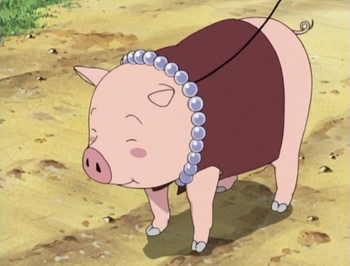Tonton est le cochon ninja de Tsunade, souvent gardé aux soins de Shizune.
Il est le cochon de compagnie de Tsunade.
Par-dessus tout, Tonton est un cochon de compagnie très dévoué, et consciencieux. Sa dévotion envers Tsunade a été remarquée lors du combat de son maître contre les autres Sannin, qu'elle a regardé avec sérieux tandis que Gamakichi et Gamatatsu se chamaillaient. Elle a même fait surface pendant la quatrième guerre mondiale des shinobis. Shinobi, où, dans son désir d'aider la Division Médicale et de Soutien Logistique. a transporté plusieurs caisses de grande taille autour du camp, se foulant ainsi le pied. son pied.
Sand Siblings

Les Trois Sœurs de Sable est le nom collectif des enfants du Quatrième Kazekage de Sunagakure. Kazekage : Temari, Kankurō et Gaara. Ayant subi l'entraînement éreintant de leur village, ces trois-là sont considérés comme des shinobis d'élite de leur village qui excellent dans le combat à distance.
Quelque temps après l'échec de l'écrasement de Konoha, ses membres ont été promus : Gaara est devenu le Kazekage, Kankurō et Temari sont devenus jōnin, Temari devenant également ambassadeur.Dans la partie II, Temari et Kankurō accompagnent Gaara au sommet des Cinq Kage en tant que gardes du corps. Sommet en tant que ses gardes du corps.
Hidan
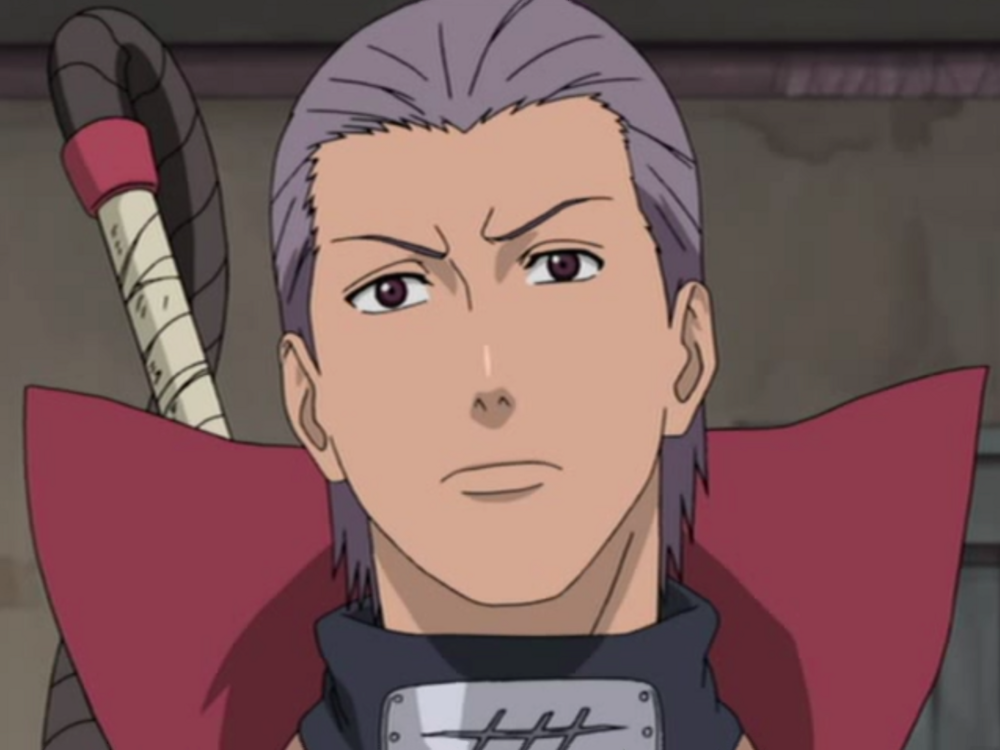Hidan est un nin manquant de rang S qui a fait défection à Yugakure et qui a plus tard rejoint l'Akatsuki. Là, il a fait équipe avec Kakuzu, malgré l'aversion réciproque des deux hommes.
Hidan ne semble pas toujours être le plus intelligent de l'Akatsuki. Il n'a certainement pas le don pour la planification à long terme que Pain ou Tobi ont, par exemple. Cependant, Hidan, tout comme Kakuzu, a une grande compréhension de l'anatomie et de la façon dont les capacités des shinobis sont utilisées. l'anatomie et le fonctionnement des capacités des shinobis. C'est ainsi qu'il parvient à se maintenir fonctionnellement immortel. Cela lui donne un avantage dans un combat, même quand il n'utilise pas sa tête pour la stratégie.
Sakon & Ukon
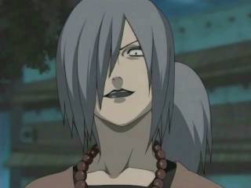Ils travaillent pour Orochi-Maru, un génie du mal déterminé à découvrir et à maîtriser tous les jutsu du monde. jutsu du monde. Sakon et Ukon sont l'un de ses principaux pions, en tant que membres du groupe des 5 sons. (Ninja du son sombre avec des compétences et des capacités horribles).
Sakon et Ukon ont la capacité d'attacher leurs cellules à celles de leur adversaire lorsqu'ils le touchent. leurs adversaires, pour ne faire qu'un et tuer lentement les cellules de leurs adversaires à la place des leurs. à la place des leurs. Personne n'avait jamais survécu à ça, mais personne n'avait jamais été aussi courageux comme Kiba, et il s'est poignardé lui-même, brisant leurs deux cellules et étant libéré. Sakon et Ukon furent finalement vaincus par le jutsu de signature de Kiba et Akamaru, le "Loup géant à deux têtes loup à 2 têtes Tsuuga !"
Zabuza

Zabuza Momochi (桃地再不斬, Momochi Zabuza), surnommé le Démon de la brume cachée (霧隠れの人). Brume Cachée (霧隠れの鬼人, Kirigakure no Kijin), était un nin manquant des Sept Epéistes Ninja de Kirigakure. Ninja Swordsmen of the Mist.
En tant que ninja de la brume cachée, le point fort de Zabuza est d'utiliser le chakra de la nature de l'eau pour la manipuler. pour qu'elle prenne les formes qu'il souhaite, comme créer des clones d'eau. Parmi ses capacités, il y a le jutsu du Dragon d'eau où il crée un dragon serpentin à partir de l'eau pour consommer sa cible.
Tenten
IDans le Konoha 11, qui comprend de nombreux pairs de Naruto dans l'équipe sept, l'équipe huit, l'équipe dix et l'équipe Guy. l'équipe sept, l'équipe huit, l'équipe dix, et l'équipe Guy, il y a des ninjas comme Rock Lee qui excellent dans le taijutsu ainsi que des ninjas considérés comme des génies comme Shikamaru et Neji. Cependant, parmi les onze, il y a un ninja qui n'est pas sous les feux de la rampe. la lumière des projecteurs : Tenten
Tenten a été présentée comme une spécialiste des outils et des armes ninja, nous en savons peu sur son clan et son passé. Même dans son combat le plus connu bataille contre Temari pendant les examens de Chunin, elle elle a été pratiquement vaincue avant que quiconque n'ait eu la chance de voir ses réelles capacités de combat.
Might Guy
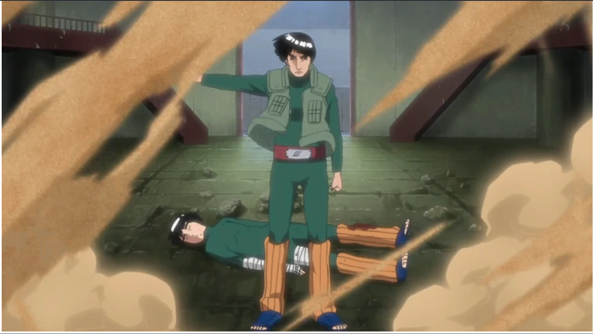Might Guy (マイト・ガイ, Maito Gai) est un jōnin de Konohagakure. Un maître de taijutsu, Guy dirige et transmet sa sagesse aux membres de l'équipe Guy.
Guy est le fils de Might Duy, qui était connu dans tout Konoha comme le "Genin éternel". Duy n'était pas dérangé par ce surnom et était plutôt reconnaissant que d'autres personnes s'intéressent suffisamment à lui pour le connaître. Duy encourageait ce même optimisme chez Guy, ainsi que sa croyance en la jeunesse et en l'avenir. qu'on a toujours de la jeunesse et qu'ils pouvaient tous deux devenir des maîtres de taijutsu grâce à un entraînement assidu. Guy faisait de son mieux pour incarner l'enseignement de son père, mais il doutait que les paroles de Duy puissent lui être utiles. doutait que les mots de Duy soient dénués de sens.
Asuma Sarutobi
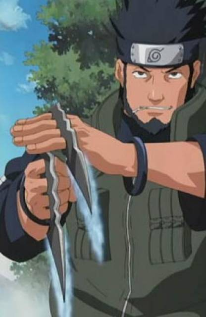Un Jounin du village de la Feuille Cachée. Un ninja très calme et fort, qui apprécie toujours une bonne cigarette. Il sort avec Kurenai, une forte utilisatrice de Genjutsu. Il est le fils d'Hiruzen Sarutobi, le troisième Hokage, et l'oncle de Konohamaru Sarutobi. de Konohamaru Sarutobi. Chef d'escadron Jonin de l'équipe 10, l'actuel trio Ino-Shika-Chou jusqu'à ce qu'il rencontre sa fin par le membre de l'Akatsuki, Hidan. Il a ensuite été ressuscité avec la technique de résurrection du monde impur pour participer à la quatrième guerre mondiale des shinobis.
Ses capacités lui valent d'être intégré aux Douze Ninja Gardiens - une équipe d'élite triée sur le volet. d'élite triée sur le volet qui servait à protéger les daimyō du Pays du Feu - un rôle qui lui valut plus tard une prime de 35 000 000 ryō.[9][21] Il pouvait sans effort abattre neuf Oto-nin lors de l'écrasement de Konoha, notoirement de niveau chūnin ou supérieur[22]. supérieur[22], et était capable de se mesurer à Hidan, un puissant membre de l'Akatsuki, tout en tout en protégeant son équipe.
Hidan
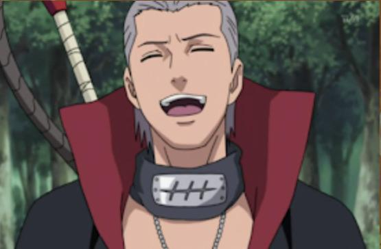Hidan (飛段) est le partenaire immortel, grossier et sadomasochiste de Kakuzu. de Kakuzu et un ancien ninja de Yugakure, le village caché dans l'eau bouillante. Il est un membre de la religion de la Voie de Jashin (ジャシン, lit. "dieu maléfique"), qui vénère une divinité du même nom. qui vénère une divinité du même nom et qui considère que tout ce qui n'est pas la mort et la destruction totale au combat est un péché.
Hidan peut créer un lien avec son adversaire. Une fois ce lien créé, tout dommage causé au corps de le corps de Hidan se reflète sur son adversaire, lui permettant de le tuer en s'infligeant lui-même des des blessures mortelles. Bien que son immortalité l'empêche de mourir ou de souffrir d'une quelconque déficience, Hidan ressent la souffrance de ses victimes avec une excitation à la limite de l'excitation.
Kakashi Hatake
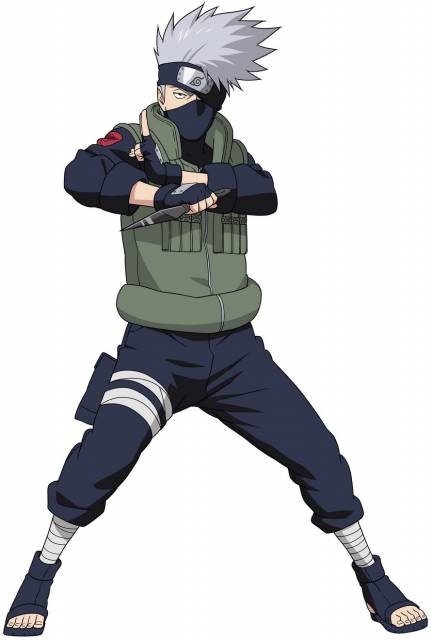Kakashi Hatake est l'un des ninjas de haut niveau du village de la feuille cachée. caché. Il est le professeur (sensei) d'Uzumaki Naruto, Haruno Sakura et Uchiha Sasuke. Son professeur était le quatrième Hokage, Minato Namikaze, et ses coéquipiers étaient Obito Uchiha et Rita. étaient Obito Uchiha et Rin Nohara. Son rival est Might Guy.
Il a travaillé et prospéré à tous les niveaux, y compris au sein de l'ANBU. Il a une capacité d'invocation avec une meute de chiens ninjas, dont l'un parle et qui sont tous d'excellents traqueurs. traqueurs. Il n'a jamais été montré sans ses masques. Il en porte au moins deux, et même ses amis proches ne savent pas à quoi il ressemble. Peu après la guerre des ninjas, Kakashi devient le sixième Hokage du village de la Feuille Cachée. après avoir suivi les conseils d'Obito.
Fugaku
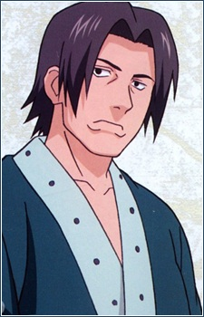Fugaku Uchiha (うちはフガク, Uchiha Fugaku) était un shinobi de Konohagakure. Il chef du clan Uchiha ainsi que le chef de la police militaire de Konoha. Force.
Fugaku Uchiha était aussi fort que le quatrième Hokage Minato Namikaze. Parlons de la grande guerre ninja. Minato a tué une armée de 1000 hommes en utilisant le "dieu du tonnerre volant", c'est-à-dire Hirashino. jutsu. Dans cette même guerre, Fugaku a tué un nombre incalculable de personnes en utilisant uniquement le genjutsu. Un de ses camarades est mort en le couvrant et il a débloqué le Mangekyo Sharingan. Pendant la guerre, il a gagné le nom de Fugaku "Wicked Eye".
Inari
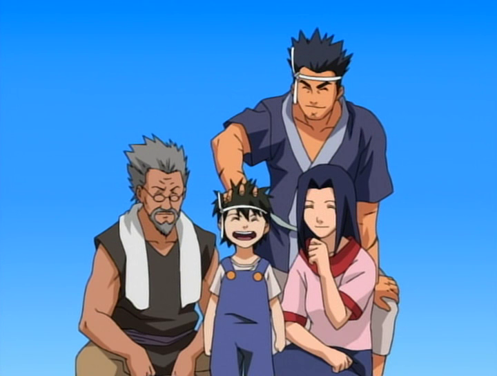Inari (イナリ, Inari) est une jeune citoyenne du Pays des Vagues.
Inari est le fils de Tsunami, et est également le petit-fils de Tazuna. Son père biologique est mort avant qu'il n'ait pu le connaître.
Inari a d'abord semblé être un individu très dur, bien que ce ne soit qu'une ruse qu'il a mise en place pour cacher la solitude qu'il ressentait depuis la mort de Kaiza. Il passait souvent la plupart de son dans sa chambre à regarder une photo de son père, en conflit avec les sentiments qu'il avait de perte et de colère envers l'homme pour être mort, bien qu'il l'ait fait pour protéger leur petit village.Third Raikage
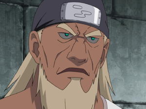Le troisième raikage (三代目雷影, Sandaime Raikage, signifiant littéralement : Troisième ombre de la foudre) de Kumogakure, était réputé pour être le plus grand Raikage que le village ait jamais eu.
Le règne du Troisième Raikage a été ponctué par les attaques frénétiques des Huit queues mais comme Kumogakure ne pouvait pas se permettre de se débarrasser d'une si précieuse arme de dissuasion, il fut contraint de chercher un jinchūriki approprié dans une succession rapide, après la conclusion de chaque saccage. Au cours de l'une de ces attaques, il a combattu les Huit-Files seul, permettant à ses camarades de s'échapper. Leur combat s'est soldé par une blessure qu'il s'est lui-même infligée à la poitrine poitrine après s'être effondré sur sa propre main, ce qui est devenu la honte de sa vie.
Depuis cet événement, il s'est fait un devoir personnel de combattre les Huit-Faces chaque fois que ses jinchūriki perdaient le contrôle, faisant même de son fils un membre du groupe qui le soutenait. qui le soutenait lors de ces événements. Il choisit de sceller les Huit queues dans le Kohaku no Jōhei, entraînant la mort de son neveu, dans l'espoir que quelqu'un d'autre ait plus de plus de succès à le contrôler.
Mikoto Uchiha

Mikoto Uchiha (うちはミコト, Uchiha Mikoto) était un jōnin du clan Uchiha de Konohagakure. Uchiha de Konohagakure.
Mikoto était une femme très douce et gentille, mais elle pouvait aussi être sévère et stricte quand il le fallait. comme lorsqu'Itachi revenait de l'académie et qu'elle disait à Sasuke qu'il ne pouvait pas jouer car il avait des devoirs. qu'il ne pouvait pas jouer parce qu'il avait des devoirs. Elle aimait profondément profondément ses fils et savait comment les aider à résoudre leurs problèmes. Mikoto prenait soin de son mari et respectait son mari et comprenait l'importance de sa position en tant que chef du clan Uchiha. en tant que chef du clan Uchiha et était une épouse dévouée et loyale. et loyale envers lui.
Black Zetsu

Black Zetsu (黒ゼツ, Kuro Zetsu) était la manifestation physique de la volonté de la princesse Kaguya Ōtsutsuki. la volonté de la princesse Kaguya Ōtsutsuki. Il est secrètement à l'origine de nombreux événements qui ont façonné le monde des shinobis pour assurer la renaissance de Kaguya. Pour faire avancer ses plans, il s'est fait passer il s'est fait passer pour la volonté manifestée de Madara Uchiha, puis s'est associé à Zetsu le Blanc pour devenir la moitié du membre de l'Akatsuki connu sous le nom de Zetsu (ゼツ, Zetsu).
Zetsu noir a été créé par Kaguya Ōtsutsuki peu de temps avant qu'elle ne soit scellée comme les Ten-Tails par ses fils jumeaux, Hagoromo et Hamura. Dans l'anime, Zetsu noir s'approcherait périodiquement d'Indra seul, le poussant à faire des éloges et à être curiosité à l'égard du véritable potentiel d'Indra, allant même jusqu'à dire qu'il pouvait rivaliser, voire surpasser, le Sage des Six Chemins. 6] Lorsque Hagoromo a nommé son fils cadet, Asura, comme nouveau chef de la famille, il s'est rendu compte qu'il n'était pas le seul, Asura, comme nouveau chef du Ninshū, Black Zetsu tenta le fils aîné d'Hagoromo, Indra, de partir en guerre contre son jeune frère. Il Il a décidé que les descendants d'Indra, les Uchiha, seraient les acteurs principaux de l'histoire shinobi qu'il créait et a également modifié la tablette d'Hagoromo d'Hagoromo pour affirmer, entre autres, que le Tsukuyomi Infini serait le salut des Uchiha. le salut de l'Uchiha.
Mito Uzumaki
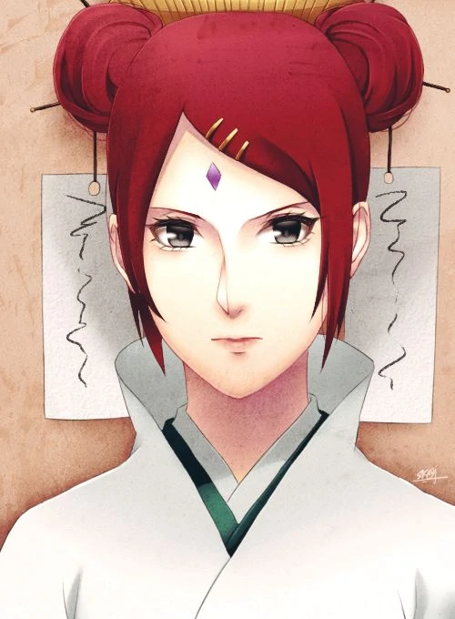Mito Uzumaki (うずまきミト, Uzumaki Mito) était un kunoichi originaire du clan Uzushiogakure. du clan Uzumaki d'Uzushiogakure. Après avoir migré à Konohagakure, elle a épousé Hashirama Senju, le Premier Hokage du village, et devint plus tard le premier jinchūriki des Neuf-Files à la suite des événements de la Vallée de la Fin.
Les clans Uzumaki et Senju, bien que parents éloignés, ont toujours eu des liens étroits. Mito a fini par épouser Hashirama Senju, qui a contribué à la fondation de Konohagakure et est devenu le le premier Hokage du village. Après la victoire d'Hashirama d'Hashirama contre Madara Uchiha à la Vallée de la Fin et l'obtention de Kurama de sa part. scella la bête à queue en elle, devenant son premier jinchūriki. Malgré la la force du sceau, il faillit se briser lors de l'accouchement. l'accouchement.
Guren
Guren (紅蓮, Guren) est un kunoichi d'Otogakure et le chef d'un groupe de subordonnés d'Orochimaru. groupe de subordonnés d'Orochimaru, possédant l'unique Crystal Release kekkei genkai.
on lui a offert la chance de devenir l'un des futurs vaisseaux d'Orochimaru. Lorsque Sasuke Uchiha a fait défection à Konohagakure et que Kimimaro n'a plus été un Kimimaro n'était plus un vaisseau approprié pour Orochimaru, Guren est devenue le meilleur choix aux yeux d'Orochimaru. Malheureusement, au moment où elle est arrivée, Orochimaru n'a pas pu attendre plus longtemps et a choisi Gen'yūmaru. On lui a également dit que Sasuke serait le prochain récipient prochain vaisseau après le Gen'yūmaru. Ne se sentant plus utile à Orochimaru, Guren se mit en isolement.
Hanzō
Hanzō (半蔵, Hanzō), redouté comme Hanzō de la Salamandre (山椒魚の半蔵, Sanshōuo no Hanzō), était un shinobi légendaire, et le leader d'Amegakure de son vivant.
À un moment de son enfance, Hanzō a découvert une salamandre noire au venin mortel qui résidait dans son village. Lorsqu'elle mourut, son sac à venin fut intégré à son corps dans l'espoir de créer un ninja venimeux qui était lui-même immunisé contre les toxines. Cela l'obligeait à porter un masque en permanence, afin de protéger les autres de son haleine chargée de venin. de son haleine chargée de venin.[4] À un certain moment après cela, Hanzō est devenu très connu et réputé dans le monde des shinobis, à tel point que des ennemis sont connus pour fuir à sa seule vue.
Konan

Konan (小南, Konan) était un kunoichi d'Amegakure et un membre fondateur de l'Akatsuki. de l'Akatsuki originale. Après la mort de Yahiko, elle a été associée à Nagato, qui avait depuis pris le contrôle de l'Akatsuki. depuis pris le contrôle de l'Akatsuki, et était le seul membre à l'appeler par son nom. par son nom. Après la mort de Nagato, Konan a quitté l'Akatsuki et est devenue de facto le chef du village d'Amegakure. chef de village d'Amegakure.
Lorsqu'elle était jeune, la famille de Konan a été tuée pendant la deuxième guerre mondiale shinobi, et elle a été laissée à elle-même. et elle a été laissée à elle-même.[4] Quelque temps plus tard, Yahiko l'a trouvée et les deux ont travaillé ensemble ont travaillé ensemble pour survivre. Peu de temps après, Konan est allée se promener et a trouvé un jeune Nagato mourant et son chien, Chibi. Elle l'a sauvé et et l'a ramené dans leur cachette. Petit à petit, les trois sont devenus les meilleurs amis du monde. Ils Ils ont finalement rencontré les Sannin, qui leur ont donné de la nourriture. Konan les a impressionnés en faisant une fleur élaborée à partir des emballages en papier laissés en signe de gratitude. Quand Orochimaru a suggéré de les tuer pour qu'ils n'aient pas à souffrir des horreurs de la guerre. pour qu'ils n'aient pas à souffrir des horreurs de la guerre, Jiraiya a préféré rester et leur apprendre à se débrouiller seuls.
Kidomaru

Un ninja du village du son caché et membre des cinq du son.
.
Kidomaru a été tué en combattant contre Neji Hyuga.Karin
Karin (香燐, Karin) est une subordonnée d'Orochimaru, une ancienne kunoichi de Kusagakure, et un membre du clan Uzumaki[3][4] Elle a assisté Orochimaru dans ses expériences, et a été laissée en charge en tant que gardienne de sa Cachette Sud pendant son absence. Elle a ensuite été recrutée dans le groupe Taka de Sasuke Uchiha, qui s'appelait initialement "Hebi" à l'époque de sa création.
.
Karin a été louée pour ses capacités à la fois par Obito Uchiha et Orochimaru, ce dernier ayant décidé de la prendre avec lui pour cette raison. Malgré le fait qu'elle soit principalement une non-combattante, Orochimaru faisait référence à Karin comme l'une de ses bonnes expériences[4], et avait suffisamment confiance en ses compétences pour la mettre en charge de la prison de la Cachette Sud, puisqu'elle rendait toute évasion impossible. Karin a par la suite démontré ces compétences de manière plus importante lors de la Quatrième Guerre mondiale des Shinobis, où elle a détruit une grande partie de la statue géante en bois de Tobi.Ebisu Sensei
Ebisu (エビス, Ebisu) est un tokubetsu jōnin de Konohagakure qui se spécialise dans l'entraînement des ninjas d'élite. se spécialise dans l'entraînement des ninjas d'élite. Il a également été le chef de l'équipe Ebisu, qui était composée de Konohamaru Sarakure. composée de Konohamaru Sarutobi, Udon, et Moegi.
Ebisu est dépeint comme quelqu'un de sévère et qui suit les règles de l'art. Au début, il a exprimé haine pour Naruto Uzumaki, et pensait qu'il n'était rien d'autre qu'une nuisance sans valeur. se moquait de son rêve de devenir Hokage car il pensait que que seules les personnes de haute lignée peuvent arriver à quelque chose. En voyant ce que Naruto avait fait pour Konohamaru son point de vue a changé radicalement, et plus tard le village pendant village lors de l'assaut de Pain, il choisit de ne pas se rendre. l'emplacement de Naruto et préfère être tué. Il est également assez attaché à ses élèves, et a fait preuve d'une immense fierté à leur égard, comme lorsque Konohamaru a exécuté le Rasengan sur Pain lors du sauvetage d'Ebisu.
Tobirama Senju

Tobirama Senju (千手扉間, Senju Tobirama) était un membre du célèbre clan Senju. Senju, qui, avec son frère aîné et le clan Uchiha, a fondé le premier village shinobi : Konohagakure. Tout au long de sa vie, Tobirama a travaillerait sans relâche pour atteindre la stabilité politique et mettre en place les institutions qui ont fait le système des villages, assurant ainsi la continuité et la prospérité de Konoha. Après la mort de son la mort de son frère, il a obtenu le titre de Second Hokage (二代目火影, Nidaime Hokage, signifiant littéralement : Deuxième Ombre de Feu).
Comme Hashirama avant lui, Tobirama a essayé d'entretenir de bonnes relations avec les autres villages. Il a planifié une alliance entre Konoha et Kumogakure, mais lors d'une cérémonie officielle. cérémonie officielle, lui et le second Raikage ont été attaqués par les Frères d'or et d'argent. et les Frères d'Or et d'Argent et ont frôlé la mort. Au cours de la première guerre mondiale des shinobis, l'Équipe Tobirama, ainsi que Danzō Shimura, Torifu Akimichi, et Kagami Uchiha se sont retrouvés encerclés par la force Kinkaku de Kumo. Sans aucun moyen pour Tobirama s'est porté volontaire pour agir comme un leurre à la place de Hiruzen. Alors qu'il il a transmis le titre d'Hokage à Hiruzen, avant d'être tué par la force Kinkaku.
Hinata Hyuga
Hinata, l'aînée des deux enfants de Hiashi Hyuga, est élevée comme l'héritière de la maison principale du clan Hyuga. héritière de la maison principale du clan Hyuga, Hiashi étant l'aîné entre lui et son frère jumeau, Hizashi. frère jumeau, Hizashi, ce qui fait d'Hiashi le chef du clan. tandis qu'Hizashi est rétrogradé à la maison secondaire dont le seul but est de servir la branche branche supérieure.
Hinata rencontre également Naruto Uzumaki pendant sa jeunesse, développant un intérêt pour lui après qu'il l'ait défendue alors qu'elle était victime de brimades à cause de ses yeux[25]. après qu'il l'ait défendue alors qu'elle était victime de brimades à cause de ses yeux[25]. refus de Naruto d'abandonner face à l'adversité inspirent Hinata à devenir une personne plus forte. Cependant, l'admiration d'Hinata pour Naruto se transforme progressivement en sentiments romantiques. se transforme progressivement en sentiments romantiques.
Hiashi Hyuga
Hiashi Hyūga (日向ヒアシ, Hyūga Hiashi) est un shinobi de Konohagakure, ainsi que le chef actuel du clan Hyūga. ainsi que l'actuel chef du clan Hyūga.
Hiashi est né quelques secondes avant son frère jumeau Hizashi, ce qui fait d'Hiashi l'esprit du clan Hyūga. En tant que chef du clan Hyūga, Hiashi est sans aucun doute un puissant shinobi. Il connaît parfaitement toutes les procédures secrètes et le style de combat de son clan. En tant que membre de ce clan Hyūga, Hiashi possède le Byakugan : un dōjutsukekkei genkai qui lui confère un champ de vision de presque 360°. Hiashi est un véritable maître du taijutsukkei secret du clan Hyūga, le poing doux.
Asuma Sarutobi
Un Jounin du village de la Feuille Cachée. Un ninja très calme et fort, qui apprécie toujours une bonne cigarette. Il sort avec Kurenai, une forte utilisatrice de Genjutsu. Il est le fils d'Hiruzen Sarutobi, le troisième Hokage, et l'oncle de Konohamaru Sarutobi. de Konohamaru Sarutobi. Chef d'escadron Jonin de l'équipe 10, l'actuel trio Ino-Shika-Chou jusqu'à ce qu'il rencontre sa fin par le membre de l'Akatsuki, Hidan. Il a ensuite été ressuscité avec la technique de résurrection du monde impur pour participer à la quatrième guerre mondiale des shinobis.
Ses capacités lui valent d'être intégré aux Douze Ninja Gardiens - une équipe d'élite triée sur le volet. d'élite triée sur le volet qui servait à protéger les daimyō du Pays du Feu - un rôle qui lui valut plus tard une prime de 35 000 000 ryō.[9][21] Il pouvait sans effort abattre neuf Oto-nin lors de l'écrasement de Konoha, notoirement de niveau chūnin ou supérieur[22]. supérieur[22], et était capable de se mesurer à Hidan, un puissant membre de l'Akatsuki, tout en tout en protégeant son équipe.
Choza Akimichi
Choza Akimichi (秋道チョウザ, Akimichi Chōza) est un jōnin de Konohagakure et ancien coéquipier de Shikaku Nara et Inoichi Yamanaka. Ensemble, ils formaient le précédent trio Ino-Shika-Chō. Il est également le quinzième chef du clan Akimichi (秋道15代目当主, Akimichi Jūgodaime Tōshu).
Madara Uchiha
Madara Uchiha (うちはマダラ, Uchiha Madara) était le chef légendaire du clan Uchiha. clan Uchiha. Il a fondé Konohagakure aux côtés de son ami d'enfance et rival, Hashirama Senju, avec l'intention de commencer une ère de paix. Lorsque les deux hommes n'ont pas pu se mettre d'accord sur sur la façon d'atteindre cette paix, ils se sont battus pour le contrôle du village. s'est terminé par la mort de Madara. Madara, cependant, a réécrit sa mort et s'est caché pour travailler sur ses propres plans. Incapable de le mener à bien dans sa vie naturelle, il a confié son savoir et ses plans à Obito, peu avant sa mort réelle. Des années plus tard, Madara sera reviendra à la vie, pour voir ses plans déjoués et finalement, réaliser l'erreur de ses actes et s'amender auprès d'Hashirama avant sa mort définitive.
Izuna Uchiha
Izuna Uchiha (うちはイズナ, Uchiha Izuna) était un shinobi du clan Uchiha. Avec son frère Madara, il était réputé pour être les deux membres les plus forts du clan de leur vivant. leur vie.
Hashirama Senju
Le premier hokage, chef du clan Senju, l'un des fondateurs de Konohagakure. Frère aîné du Second Hokage et grand-père du Cinquième Hokage. Il possède le Style du Bois et a un ami et rival appelé Madara Uchiha.
Il a également fait preuve d'une grande habileté tactique et de capacités de tromperie, attendant que Madara soit devenu tellement épuisé qu'il ne pouvait plus maintenir son Sharingan pour créer un clone en bois pour Madara. afin qu'il puisse attaquer par derrière sans que son adversaire sans même s'en rendre compte.
Kaguya Otsutsuki

Kaguya est à l'origine des shinobis dans le monde où se déroule Naruto. Naruto. Elle était autrefois bienveillante et respectée, mais elle a été corrompue. Elle est le dernier méchant à s'opposer à l'équipe de Naruto dans le manga.
Le boss final de Naruto s'est avéré être une femme ! Qui aurait pu le voir venir ? ! On On pourrait se demander si Kishimoto n'a pas finalement tourné la page et réalisé que les femmes aussi peuvent être des personnages qui peuvent être beaucoup plus au-delà de leur genre. Mais hélas, ces espoirs ont été immédiatement anéantis lorsque les fans ont réalisé que non seulement ce grand méchant n'avait été révélé qu'à la toute dernière seconde (sans aucune préfiguration, d'ailleurs), mais son histoire de fond était tellement exagérée que même les fans inconditionnels ne pouvaient pas défendre sa présence.
Killer Bee
Killer B est un personnage secondaire majeur de l'anime et du manga Naruto Shippuden. Il est l'hôte de Gyuki, le démon Ox à huit queues. Il était un shinobi qui formé Naruto et est partenaire avec lui lors du combat contre Obito Uchiha.
Killer B (キラービー, Kirā Bī, Viz : Killer Bee) est un shinobi de Kumogakure. Il est le plus récent jinchūriki des Huit Queues, Gyūki, bien que, contrairement à ses prédécesseurs, il ait été capable de se lier d'amitié avec lui et d'affiner son pouvoir au profit de Kumo. Bien qu'il soit responsable de la la protection du village, B aspire à devenir le plus grand rappeur du monde.
Gamabunta
Gamabunta est un crapaud grincheux, têtu et très apathique. Il a été invoqué par le seigneur quatrième Hokage, sensei Jiraiya et par Naruto.
Gamabunta peut cracher de l'huile de sa bouche et l'utiliser pour renforcer le feu. Il est l'un des plus grand animal d'invocation dans la série. Il a été invoqué par Naruto au moment où il était tombant d'une mort potentielle.
Juubi

La bête à dix queues a été créée par Kaguya Otsutsuki et son chakra a été ensuite chakra divisé en neuf bêtes à queue.
La Bête à dix queues (十尾, Jūbi) est le démon originel et primordial de l'univers de Naruto. Les neuf bêtes à queue ne sont que des portions de chakra divisées à partir des Dix-Files. L'objectif ultime de Madara Uchiha, le plan de l'oeil de la lune, est de capturer et de fusionner les neuf bêtes à queue en dix queues, et de devenir son hôte pour projeter le reflet de son Sharingan sur la lune. son Sharingan sur la lune, en lançant un genjutsu connu sous le nom de Tsukuyomi infini qui va mettre le monde entier sous son contrôle.
Matatabi
Matatabi, aussi connu sous le nom de Deux Queues, est l'un des neuf animaux à queue. Yugito Nii est le jinchūriki de sa bête.
Matatabi a montré qu'elle était respectueuse et polie envers les autres, elle est complètement engloutie dans des flammes bleues. Matatabi a également des muscles souples, qui lui confèrent une grande vitesse malgré sa grande taille. sa grande taille
Obito Uchiha

Obito Uchiha
Un personnage de la série animée Naruto. Il prétendait être Madara Uchiha, l'homme qui avait a combattu le premier Hokage, Hashirama. Il est l'antagoniste principal de la série Naruto. Il également connu sous le nom de Tobi. Il est un ancien élève du quatrième Hokage, Minato. Il est responsable de l'attaque des neuf queues sur Konoha ainsi que du massacre du clan Uchiha, qui a ruiné la vie de Naruto et de Sasuke. Son meilleur ami est Kakashi Hatake et son amoureuse Rin Nohara. intérêt est Rin Nohara
Rin Nohara
Rin Nohara
Rin Nohara était un chūnin de Konohagakure et un membre de l'équipe Minato aux côtés de Kakashi. Hatake et Obito Uchiha. Rin a été transformée de force en réceptacle pour les Trois Queues (Isobu) dans le cadre d'une stratégie pour détruire son village par la Brume Cachée. Elle s'est finalement sacrifiée pour le bien du village et de ceux qu'elle aime.
Jiraiya

Jiraiya
Jiraiya est l'un des "Trois Sannins Légendaires", connu dans le monde des ninjas. ninja. Jiraiya est le professeur de nombreux personnages de l'univers Naruto, notamment Naruto et le 4ème Hokage. Il est un pervers renommé et l'auteur de nombreux livres pour adultes. Il est l'un des trois sannin légendaires et, à l'époque de la série, il a entre 51 et 54 ans. 51-54 ans. Jiraiya a commencé comme élève du troisième Hokage, avec ses coéquipiers Orochimaru et Tsunade.
Iruka Umino

Iruka Umino
Le professeur principal dans l'acédie ninja, il a grandi comme Naruto en tant qu'orphelin. orphelin et agit donc comme un père pour Naruto. L'homme qui incarne Iruka Umino est Quinton Flynn.
Orochimaru

Orochimaru
Avec l'ambition d'apprendre tous les secrets du monde, Orochimaru recherche l'immortalité afin de pouvoir vivre toutes les vies nécessaires pour accomplir sa tâche. Après avoir été pris en flagrant délit d'expériences contraires à l'éthique sur ses concitoyens au nom de cette immortalité.
Kakuzu

Kakuzu
Kakuzu est un membre de l'organisation criminelle connue sous le nom de Akatsuki. Il est le comptable de l'Akatsuki ce qui le rend obsédé par l'argent, il possède également cinq cœurs. Il a combattu une fois le premier Hokage Hashirama et a perdu. C'est un ancien shinobi du village caché dans les chutes d'eau.
Kurama

Kurama
Kurama (九喇嘛, Kurama), plus communément appelé le neuf queues (九尾, Kyūbi), était l'une des bêtes à neuf queues. Après avoir été scellé dans Naruto Uzumaki, Kurama tente de maintenir sa perspective cynique sur le monde. cynique sur le monde, mais avec l'insistance de Naruto pour le Naruto qui insiste pour le traiter avec respect, le renard renverse sa haine et se et accepte volontiers s'efforce d'utiliser son pouvoir pour le salut du monde.
Teuchi

Teuchi
En tant qu'adolescent, 34 ans avant la 4ème guerre mondiale des Shinobis. Shinobi, Teuchi a consacré sa vie à faire ramen. Plus d'une décennie plus tard, il a eu une fille appelée Ayame.
Teuchi est un homme très gentil et jovial. Souvent vu souriant, lui et Ayame ont toujours bien traité Naruto Uzumaki, le considérant comme leur meilleur client, lui offrant même parfois gratuitement ramen gratuits lors d'occasions spéciales.
Pain

Pain
Pain est le chef reconnu de l'Akatsuki et le leader d'Amegakure. Il manie le légendaire Rinnegan et se considère comme un dieu. Son véritable nom est révélé être Nagato et il est devenu orphelin à cause de la guerre avec ses amis ses amis Yahiko et Konan. Les Trois ont été formés par Jiraiya au Ninjutsu.
Ebizo
Ebizo
Ebizō (エビゾウ, Ebizō), appelé Honoured Grandfather Ebizō (エビゾウジイ様, Ebizō-jiisama) par les villageois de Suna, est hautement vénéré à Sunagakure. Lui et sa sœur aînée, Chiyo, sont connus comme les Frères et sœurs honorés (御姉弟, Gokyōdai).
Nekobaa
Nekobaa
Nekobaa (猫バア, Nekobaa, TV anglaise : Granny Cat, signifiant littéralement : Grand-mère Cat) est une vieille femme qui vit dans une ville abandonnée avec sa petite-fille, Tamaki. ville abandonnée avec sa petite-fille, Tamaki. Elle tient un magasin de fournitures que le clan Uchiha utilisait autrefois. Elle vit avec beaucoup de chats, y compris ceux qui parlent, comme Denka et Hina.
Jūzō Biwa
Jūzō Biwa
Jūzō Biwa (枇杷十蔵, Biwa Jūzō) était un jōnin. de Kirigakure et membre des sept ninjas épéistes de la brume. la Brume. Dans l'anime, Jūzō a déserté son village et est devenu membre de l'Akatsuki, où il faisait équipe avec Itachi Uchiha
Shisui Uchiha

Shisui Uchiha
Shisui Uchiha (うちはシスイ, Uchiha Shisui), connu sous le nom de "Shisui du scintillement du corps" (瞬身のシスイ, Shunshin no Shisui, TV anglaise : Shisui le téléporteur), était un Anbu du clan Uchiha de Konohagakure.
Kisame Hoshigaki
Kisame Hoshigaki (干柿 鬼鮫, Hoshigaki Kisame) est un ancien ninja de Kirigakure et le partenaire d'Itachi Uchiha. une apparence unique avec une peau bleu pâle, une structure faciale en forme de perle et des dents triangulaires pointues. Bien qu'il ait été loyal envers Kirigakure, Kisame était l'un des sept épéistes de la brume, un groupe de ninja violents. brume, un groupe de ninjas violents qui utilisent de grandes épées en combat. épées en combat. Son épée, Samehada (鮫肌, "peau de requin" dans le film Shippuden), est une arme vivante recouverte d'écailles qui peut absorber une quantité incroyable de chakra de l'adversaire.
Rasa

Rasa (羅砂, Rasa) était le quatrième Kazekage (四代目風影, Yondaime Kazekage, signifiant littéralement : quatrième ombre du vent) de Sunagakure. Réputé pour sa capacité à utiliser la poussière d'or, le règne de Rasa en tant que Kazekage a été marqué par le fait qu'il réprimait fréquemment les déchaînements du Shukaku à une queue, qu'il avait scellé dans son plus jeune fils, Gaara.Rasa était un shinobi très puissant shinobi, comme le prouve son titre de Kazekage. Il pouvait même maîtriser une bête à queue entièrement libérée comme Shukaku. La perspective de ses représailles a suffi à empêcher un grand groupe d'Iwa-nin de déclencher un conflit à la frontière du Pays du Vent.Il s'est montré très observateur, repérant le troisième œil de Gaara qui l'espionnait, lui et les autres Kage réincarnés, après que Mū ait senti son chakra.
Karui

Karui (カルイ) est l'une des subordonnées de Killer Bee, faisant partie de la Team Samui. Elle est grandement inquiète de la disparition de son professeur suite à son combat contre Taka et se rend à Konohagakure avec son équipe afin de le retrouver. Jeune femme passionnée et audacieuse, elle est rapidement impliquée dans une altercation avec l'équipe Kakashi, leur reprochant de s'être liés d'amitié avec Sasuke Uchiha et de le défendre. Elle va même jusqu'à frapper brutalement Naruto au visage à plusieurs reprises après qu'il l'ait autorisée à le faire en compensation de son refus de donner des informations sur Sasuke. Karui est affectée à la deuxième division pendant la quatrième guerre ninja.
Shizune

Shizune
Shizune est la nièce de Dan, l'amant de Tsunade. Quelque temps après la mort de Dan, Tsunade a quitté Konoha et Shizune l'a accompagnée en tant que préposée. Le lien entre Tsunade et Shizune est si fort que Shizune considère que son but dans la vie est de prendre soin de Tsunade. En plus d'être l'accompagnatrice de Tsunade, elle est également une médecin-nin et jōnin de grand talent. Son talent dans le domaine médical n'est rivalisé que par celui de Sakura Haruno et de Tsunade elle-même.
Tsuande
Tsunade (綱手, Tsunade) est une descendante du clan Senju et Uzumaki, et est l'un des Sannin de Konohagakure. Elle est réputée pour être la kunoichi la plus forte du monde et le plus grand médecin-nin du monde. La perte répétée de ses proches a conduit Tsunade à abandonner plus tard Tsunade abandonne la vie de shinobi pendant de nombreuses années. Elle est finalement persuadée de revenir à Konoha et de prendre le manteau du Cinquième Hokage (五代目火影, Godaime Hokage, signifiant littéralement : Cinquième Ombre de Feu), où ses compétences s'avèrent précieuses pour le village.
Frères d'or et d'argent
Les Frères d'or et d'argent (金銀兄弟, Kingin Kyōdai), également connus sous le nom des "Deux Lumières" (二つの光, Futatsu no Hikari), étaient deux shinobi tristement célèbres de Kumogakure, qui étaient de lointains parents du Sage des Six Chemins.
Ce sont eux qui ont attaqué Tobirama, le Second Hokage, et A, le Second Raikage, lors d'une réunion d'alliance et ont ont essayé de voler les neuf queues pour eux-mêmes. Plus tard, ils ont été mangés par le démon renard à neuf queues et les frères ont mangé la viande à l'intérieur du démon renard pour rester en vie mais ils ont mais ils ont acquis une partie du chakra du renard. Ils furent ressuscités pour la quatrième guerre mondiale des shinobis.
Shino Aburame
Un membre du clan Aburame, un expert en ninja. qui impliquent des insectes. Une personne très mystérieuse et stoïque personne très mystérieuse et stoïque depuis l'enfance. Il est membre de l'équipe 8, aux côtés de ses coéquipiers coéquipiers Kiba Inuzuka et Hinata Hyuuga.
Asura Path of Pain
La voie de l'Asura (修羅道) donne à son utilisateur la capacité la capacité d'augmenter son propre corps pour invoquer une armure et diverses armes balistiques et mécaniques.
Grâce à la voie de l'Asura, l'utilisateur peut former jusqu'à quatre bras et deux visages supplémentaires. bras supplémentaires et deux visages supplémentaires, ainsi qu'une une ceinture pliée en forme de lame dentelée autour de sa taille.
Un premier Raikage
A (エー, Ē, Viz : Ei, TV anglaise : Ay) était le Premier Raikage (初代雷影, Shodai Raikage, signifiant littéralement : Premier ou fondateur de l'ombre de la foudre) qui a fondé Kumogakure dans le pays de la foudre.Pendant son leadership dans les premiers jours de Kumogakure après la période des États en guerre, A a vraisemblablement envoyé les frères d'or et d'argent capturer les neuf queues, une tâche à laquelle ils ont finalement échoué. Bien qu'on n'ait pas vu grand-chose de sa personnalité, A semblait avoir un tic verbal, terminant ses phrases par "yo" (よ). Il semblait également avoir l'habitude de plier les bras. Il était orgueilleux et entretenait l'idée que les shinobis ne devaient pas baisser la tête si facilement. A avait une forte volonté de protéger Kumogakure, ce qu'il a transmis à son successeur.
Un second Raikage
A (エー, Ē, Viz : Ei, TV anglaise : Ay) était le Second Raikage (二代目雷影, Nidaime Raikage, signifiant littéralement : Deuxième Ombre Foudroyante) de Kumogakure. Tout au long de son règne, il a travaillé dur pour établir la paix entre les autres villages cachés.Avant de devenir le Second Raikage, il a longtemps été le garde du Premier Raikage. Pendant son service, il l'a accompagné au tout premier sommet des Cinq Kage. Là, il se tenait derrière le Premier Raikage et observait attentivement le déroulement des débats. Finalement, ses longs services et son dévouement lui ont valu d'être nommé Deuxième Raikage. Pendant son mandat, A fit entrer Kumogakure dans une alliance formelle avec Konohagakure, cependant, pendant la cérémonie, lui et le Second Hokage furent pris en embuscade par les Frères d'Or et d'Argent, qui tentaient d'organiser un coup d'état. On ignore ce qui est arrivé à A, mais on dit que l'Hokage s'en est sorti de justesse... Dans l'ensemble, les actions de A ont beaucoup aidé Kumogakure à atteindre la paix. A a hérité de la forte volonté de son prédécesseur de protéger Kumogakure. Il a également été décrit comme étant amical et intelligent, comme en témoignent ses connaissances approfondies en politique.
Un troisième Raikage

A (エー, Ē, Viz : Ei, TV anglaise : Ay) était le troisième Raikage (三代目雷影, Sandaime Raikage, signifiant littéralement : Troisième Ombre Foudroyante) de Kumogakure, réputé pour être le plus grand Raikage que le village ait jamais eu. Le règne de A a été ponctué par les attaques berserk des Huit-Files, mais comme Kumogakure ne pouvait pas se permettre de se débarrasser d'une dissuasion de guerre aussi précieuse, il a été contraint de chercher un jinchūriki approprié dans une succession rapide, après la conclusion de chaque déchaînement. Au cours de l'une de ces attaques, A combattit seul les Huit-Files, permettant à ses camarades de s'échapper. Au terme de leur combat, A reçut une blessure auto-infligée à la poitrine après s'être effondré sur sa propre main, ce qui devint la honte de sa vie. Depuis cet événement, il se fit un devoir personnel de combattre le Huit-Tailles chaque fois que son jinchūriki perdait le contrôle, finissant par faire en sorte que même son fils fasse partie du groupe qui le soutenait lors de ces occurrences. Il choisit de sceller les Huit queues dans le Kohaku no Jōhei, entraînant la mort de son neveu, espérant que quelqu'un d'autre aurait plus de succès à le contrôler. A est une personne calme et apparemment pondérée. C'est aussi un homme d'honneur comme on le voit lorsqu'il s'indigne lorsque Mū pousse Ōnoki à profiter des Forces Shinobi Alliées après leur dissolution, lui disant qu'il ne permettrait pas à l'alliance de devenir détruite. C'est aussi un individu très fier et attentionné, qui s'utilise volontiers comme bouclier ou "intermédiaire" pour protéger ses camarades. Cela a également été illustré lorsqu'il a été révélé qu'après avoir reçu une cicatrice en combattant les Huit queues, même son fils ne lui a pas posé de questions détaillées à ce sujet, par respect pour la fierté de son père. A croyait aussi fermement que les enfants étaient destinés à surpasser leurs parents, à tel point qu'il disait à ses collègues Kage réincarnés de ne pas s'inquiéter d'être obligés de se battre contre leurs camarades shinobi, car leurs enfants seraient capables de les vaincre.
Tazuna
Tazuna est un maître constructeur de ponts du Pays des Vagues. Il peut parfois être dur, bien qu'il soit un homme diligent. Il aime aussi boire. Même après avoir fait croire à Konoha qu'une mission était d'un rang inférieur, Tazuna a réussi à faire culpabiliser les ninjas pour qu'ils l'accomplissent. Plus tard, Konoha a demandé à Tazuna et Inari, maintenant charpentier, d'aider à reconstruire le village après la destruction de la ville par Pain.
Ichiraku Ramen

Ichiraku Ramen
Ramen Ichiraku est l'établissement de restauration préféré de Naruto Uzumaki. Il y mange régulièrement et s'y arrête entre deux missions. Il est souvent rejoint par Iruka Umino, un autre client fréquent.
Comme tout établissement de ramen, le Ramen d'Ichiraku est proposé avec diverses garnitures, comme le char siu et les œufs durs.
Kankuro

Kankurō (カンクロウ, Kankurō) est un shinobi de Sunagakure et le deuxième aîné des trois frères et sœurs de sable. Bien qu'initialement terrifié par son jeune frère, Kankurō finira par croire en lui et en son rêve de devenir le Kazekage comme leur père avant eux et deviendra l'un des plus fidèles protecteurs, confident et garde du corps de Gaara.
Au cours de la quatrième guerre mondiale des shinobis, Kankurō indique des signes d'être un chef attentionné lorsqu'il tire Zaji de l'explosion et protège son groupe de tout danger. Il fait également preuve de détermination lors de son combat contre Deidara, Sasori et Shin. Kankurō empêche Omoi de réagir de façon excessive et de s'angoisser en lui disant de gagner la guerre à tout prix pour protéger sa famille et ses amis. Lorsque Sasori est capturé à l'intérieur de Kuroari, Kankurō aide à faire prendre conscience à Sasori de ses véritables défauts durant sa vie de marionnettiste, ce qui amène Sasori à lui confier ses marionnettes "Père et Mère". Dans la version originale japonaise, Kankurō parle avec un dialecte distinctif de Yokohama. On l'entend souvent terminer ses phrases par "-jan". Cela lui donne l'air d'un dur, car cet accent est souvent utilisé pour les membres de gangs de motards ou les jeunes punks (appelés "yankii" en japonais, Yokohama étant censé en avoir beaucoup) dans les mangas. Il est possible qu'on lui ait donné cet accent pour le différencier du japonais standard de Tokyo des personnages de Konoha.
Kushina Uzumaki

[Kushina Uzumaki (うずまき クシナ, Uzumaki Kushina) est la mère du protagoniste de la série, Naruto Uzumaki, et la femme du quatrième Hokage, Minato Namikaze].
Alors que Naruto ressemble physiquement à son père, Minato, il hérite de la plupart de sa personnalité de Kushina, qui est effrontée, capricieuse, aime le ramen, et a même le "Croyez-le !". En tant que membre du clan Uzumaki, Kushina possède un chakra spécial qui a été distingué même parmi ses pairs, ce qui lui a valu d'être envoyée de sa patrie à Konohagakure pour être l'hôte de Kurama, en remplacement de Mito Uzumaki.
Kiba Inuzuka
Kiba Inuzuka
Kiba est un personnage du manga/anime Naruto. Il est membre de l'équipe 8 avec Hinata et Shino et leur professeur est Kurenai. On le voit toujours avec son chien et son meilleur ami Akamaru. Il est membre du clan Inuzuka et est un Chunin Leaf.
Ino Yamanaka
Ino Yamanaka
Ino Yamanaka est un ninja têtu du village de la Feuille Cachée. Membre de l'équipe 10 en tant que médecin, Ino fait partie du clan Yamanaka de Konoha. Elle utilise une technique ninja familiale qui permet de contrôler l'esprit de ses ennemis. Elle est mariée à Sai et a eu un fils avec lui nommé Inojin.
Shizune
Shizune
Elle est un Jonin du village de Hidden Leaf et est l'assistante personnelle de Lady Tsunade. C'est une Ninja médicale hautement qualifiée qui s'occupe généralement de Tonton. Elle est la nièce de Dan Kato, l'amant décédé de Tsunade.
Butsuma Senju

Butsuma Senju (千手仏間, Senju Butsuma) était un membre du clan Senju durant l'ère déchirée par la guerre précédant l'ère des villages cachés.
Il était le père d'Hashirama Senju. Homme de grande taille, il possédait également des yeux noirs et des cheveux noirs à longueur d'épaule maintenus en arrière de son visage par un morceau de tissu vert clair attaché autour de son front.
Onoki
Onoki est un personnage de la série manga et anime Naruto : Shippuden. Il était le troisième Tsuchikage du village caché dans les pierres.
Il a été formé par Mu (le Second Tsuchikage) et a combattu Madara Uchiha il y a des années. Ses fidèles partenaires sont Akatsuchi et la petite-fille d'Onoki, Kurotsuchi. Après la défaite de Kaguya, il a pris sa retraite en tant que Tsuchikage et sa petite-fille Kurotsuchi lui a succédé en tant que quatrième Tsuchikage en raison de ses pouvoirs affaiblis par son âge avancé.
Shisui Uchiha
Shisui Uchiha (うちはシスイ, Uchiha Shisui), connu sous le nom de "Shisui du scintillement du corps" (瞬身のシスイ, Shunshin no Shisui, TV anglaise : Shisui le téléporteur), était un Anbu du clan Uchiha de Konohagakure.
Kae Yukiwari
Kae Yukiwari
Kae Yukiwari (雪割カエ, Yukiwari Kae) est une étudiante en échange à l'Académie de Konohagakure et une princesse du Pays du Bambou. Académie Konohagakure et la princesse du Pays du Bambou. Kae est une fille très gaie et gentille. Bien que correcte et digne, elle préfère secrètement la vie plus insouciante des roturiers, Elle n'aime pas avoir à répondre aux attentes que les gens ont pour la royauté. Elle aime lire des romans d'amour et rencontrer de nouvelles personnes.
Kabuto Yakushi
Kabuto Yakushi
Kabuto Yakushi était un orphelin de l'orphelinat de Konoha, et il était le maître du Jutsu de Réanimation, qui a joué un rôle majeur dans la Quatrième Guerre Mondiale des Shinobis. Yakushi a travaillé comme espion pour une variété de personnes, d'organisations et de nations pendant la majorité de sa vie. Quand Kabuto était plus jeune, Orochimaru a vu ses capacités médicales et de collecte d'informations et l'a nommé bras droit. et l'a nommé son bras droit.
Rock Lee
Rock Lee
Rock Lee (ロック・リー, Rokku Rī) est un shinobi du clan Lee de Konohagakure et un membre de la Team Guy. Contrairement à la plupart des shinobi, il ne possède pas les compétences nécessaires pour utiliser le ninjutsu ou le genjutsu. Cependant, il surmonte ces lacunes en suivant un entraînement spécial auprès de Puissant Guy qui fera de lui un maître de taijutsu alors qu'il est encore genin.